溫室安全構造手冊編撰委員
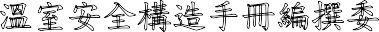
溫室安全構造手冊編撰委員
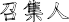
召集人:
台灣農業設施協會 黃裕益 理事長
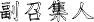
副召集人:
台灣農業設施協會 連振昌 秘書長
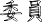
委員:
農業試驗所農工組 楊智凱 組長台南區農業改良場 鍾瑞永 課長
金屬工業研究發展中心 黃金川 技術總監
臺中市結構工程技師公會 葉瑞堯 結構技師臺中區農業改良場 張金元 助理研究員
陳泰山(旺田溫室設備企業有限公司董事長)林國明(花王農業器具有限公司總經理)
陳建興(隆笙農業有限公司總經理)
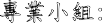
專業小組:
農業試驗所 徐武煥 副研究員 農業試驗所 黃國祥 助理研究員
台南區農業改良場 王志瑋助理研究員
臺中市結構工程技師公會 李仲彬 結構技師臺中市結構工程技師公會 許庭偉 結構技師臺中市結構工程技師公會 林育信 結構技師臺中市結構工程技師公會 洪玄如 結構技師
目錄
溫 室 安 全 構 造 手 冊 編 撰 委 員 1
目 錄 3
第 一 章 適 用 範 圍 7
適 用 範 圍 7
名 詞 定 義 7
溫 室 各 部 名 稱 8
標 準 使 用 年 限 10
第 二 章 材 料 11
2.1 前 言 11
2.1.1 範 圍 11
2.1.2 目 的 11
2.1.3 分 類 11
2.1.4 規 範 12
結 構 材 料 13
結 構 材 料 13
規 格 定 義 13
基 本 金 屬 14
被 覆 材 料 26
被 覆 材 料 之 分 類 與 適 用 規 範 27
被 覆 材 料 之 特 性 27
主 要 被 覆 材 料 之 性 能 控 制 參 數 29
基 礎 材 料 33
第 三 章 構 造 設 計 36
設 計 依 據 36
設 計 依 據 36
設 計 載 重 36
靜 載 重 36
活 載 重 40
地 震 力 40
3.2.4 風 力 42
3.3 撓 度 49
結 構 分 析 49
結 構 模 型 49
構 件 強 度 檢 核 52
載 重 組 合 53
構 件 接 合 設 計 56
接 合 型 式 56
接 合 設 計 56
基 礎 設 計 58
地 質 調 查 與 地 質 參 數 58
基 礎 構 造 設 計 59
荷 重 試 驗 59
設 計 圖 說 60
結 構 計 算 書 60
第 四 章 加 工 篇 61
機 械 加 工 62
切 削 加 工 作 業 要 點 62
成 形 加 工 作 業 要 點 64
接 合 加 工 66
螺 絲 接 合 作 業 要 點 66
焊 接 接 合 作 業 要 點 73
表 面 處 理 加 工 78
基 材 處 理 工 作 要 點 80
鍍 層 處 理 加 工 作 業 要 點 83
塗 層 處 理 加 工 作 業 要 點 86
覆 層 處 理 加 工 作 業 要 點 89
第 五 章 施 工 93
5 .1 溫 室 搭 建 規 劃 與 共 通 工 程 93
用 地 決 定 93
搭 建 規 劃 93
共 通 工 程 94
簡 易 型 溫 室 結 構 施 工 方 法 99
適 用 範 圍 99
建 造 流 程 99
5.2.3 材 料 100
地 面 施 作 101
結 構 組 合 102
簡 易 型 溫 室 結 構 施 作 注 意 事 項 103
結 構 型 溫 室 施 工 方 法 105
適 用 範 圍 105
建 造 流 程 105
5.3.3 材 料 105
地 面 及 基 礎 施 作 106
結 構 組 合 106
結 構 型 溫 室 結 構 施 作 注 意 事 項 107
被 覆 材 施 工 方 法 110
軟 質 被 覆 材 料 正 確 安 裝 方 式 110
捲 揚 裝 置 與 包 角 結 構 110
施 工 安 全 112
施 工 安 全 注 意 事 項 112
第 六 章 維 修 與 保 養 115
平 時 維 護 要 點 115
結 構 維 護 要 點 115
保 養 及 防 颱 措 施 116
防 颱 處 理 116
附 錄 119
基 本 說 明 119
基 地 位 置 及 現 況 119
建 築 設 計 基 本 說 明 120
結 構 系 統 說 明 122
設 計 載 重 122
結 構 材 料 規 格 122
設 計 法 規 123
分 析 設 計 軟 體 123
結 構 分 析 模 擬 123
分 析 載 重 名 稱 定 義 123
設 計 地 震 力 計 算 123
設 計 風 力 計 算 127
結 構 設 計 129
設 計 載 重 組 合 129
設 計 結 果 130
分 析 模 型 130
溫 室 結 構 分 析 結 果 135
接 合 檢 核 136
基 礎 檢 核 136

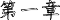
第一章 適用範圍
適用範圍
本安全構造手冊，適用於結構型溫室，簡易型溫室等園藝設施，主體結構的構造設計，施工及維修保養等工序之參考應用，天窗或捲揚等配備不包含在本手冊範圍內。
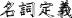
名詞定義
結構型溫室:以鋼構(參照第二章材料)樑、柱，及鋼、鋁材或錏管等構件屋面作為骨架，橫樑及側樑以型材結構加強，屋面可為山型、圓形或單斜背等幾何形狀，具有固定基礎的設施。(農糧署推動設施型農業計劃補助項目名稱為結構型鋼骨溫網室)
簡易型溫室:利用錏管加工成組合型骨架，支柱下端直接插入地面下，可不具固定基礎的設施。(農糧署推動設施型農業計劃補助項目名稱為簡易式塑膠布溫網室)
單棟：單一屋面構成的設施。
連棟：二個以上連續屋面構成的設施。
標準使用年限：設施的構造耐用上，可能使用的標準年數。
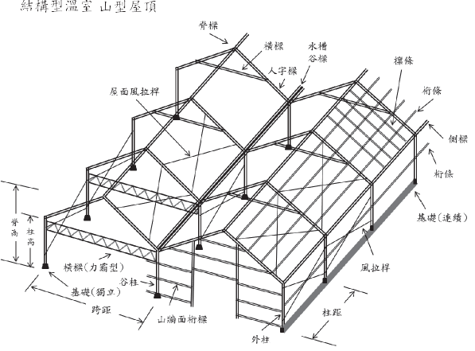
(1)
(
)
1-1 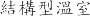 ( ) 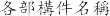
(2) 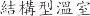( )
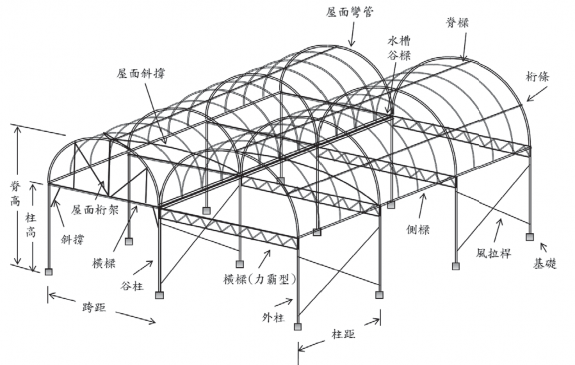
1-2 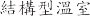 ( ) 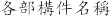
I
(3) 簡易型溫室
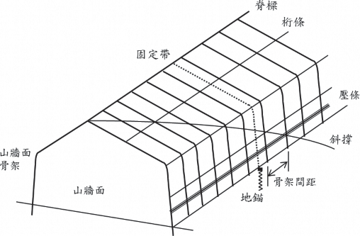
圖 1-3
簡易型溫室各部構件名稱
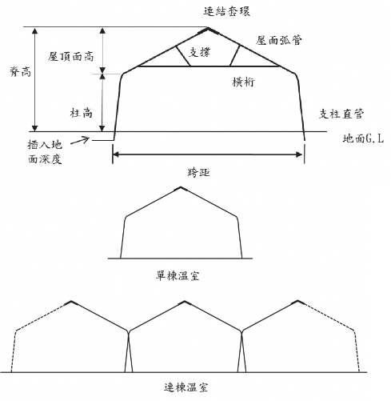
圖 1-4
簡易型溫室骨架各部名稱
勻溫室安全構造手冊
標準使用年限
表 1-1
標準使用年限
温室種類 | 標準使用年限(年) |
結構型溫室(山型屋項) | 20 |
結構型溫室(圓屋項) | 15 |
簡易型溫室 | 8 |
注上:
表所列為溫室結構主體的使用年限，不含玻璃或塑膠布等外部被霞材
料。
10
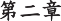 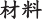
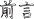
前言
2.1.1
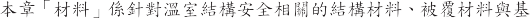
2.1.2
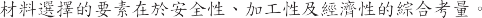
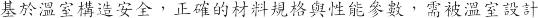
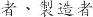( 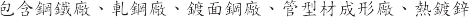
) 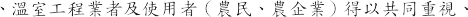

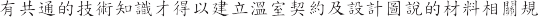
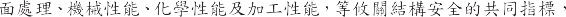
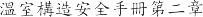
2.1.3
(1)
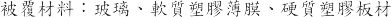
(2)
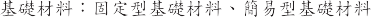
(3)
-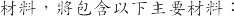
、基材、型材、管材
2.1.4
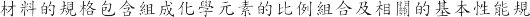
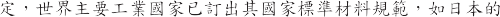 JIS 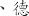
DIN 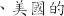 ASTM 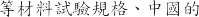 GB 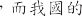 CNS
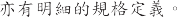
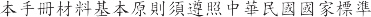 CNS
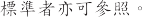
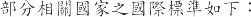
(1) CNS
(2) ASTM
(3) AISC 
(4) AWS
(5) JASS
(6) SSPC
(7) SCI 
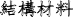
結構材料

結構材料
温室結構材料中的金屬材料具有高度的工業化、高剛性、高強度且具環保型的回收性 其佔温室材料總重 90%以上 定現代温室最主要的結構材料。
結構所使用的金屬材料包括結構用基本金屬材料（如鋼材、鋁材）、型管材(型材、管材)及接合物(如螺絲、 鉚釘、螺栓、螺恨、墊片與焊接材料等)。材料應符合所列 CNS 中國國家標準 接合物亦須符合規定。結構用金屬材(如板、片、棒、線、連接材)所使用的材料 其化學成份、機械性質均須符合 CNS 或相關國際標準的規定 若未能符合規定需求的鋼材 需設計者再審查 否則不應使用。
品質的認定方法 通當先依原生產工廠經合格標準測試實驗室所出具的品質證明書。但對各項材料如有安全考量或有爭議之虞 應共同取樣 經合格的第三方公證單位檢測。
規格定義
於農業温室 對材料專有名詞當被簡化成簡易的說法 但實際的管材材質、管徑、厚度、精度將直接影零到管的機械性能 而鍍膜的材料紐合、鍍層厚度、鍍膜方法、亦將影零到鍍膜結合強度、鍍層耐腐蝕能力、管材弄命等。
故温室的構造安全需喵實掌握所設計構件材料的質(材質與性質)、形(尺寸與形狀精度)、貌(表面處理)、能(物理性能、機械性能、化學性能)等重要參數與標準規格。
本節將分三大部分說明 分別為基本金屬、型材、管材 將各別討洒其對應的質、形、貌、能等設計參數。
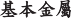
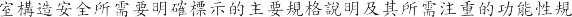
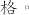
1.
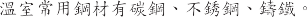
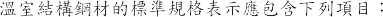
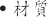 ( 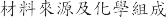)
( 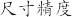)
:
(1) ：
1) ( + ) ( )
2) ( + ) (SUS 304) CNS
3) ( + % ) ( Ni 8% Cr16%)
形狀：
基本金屬材料形狀主要分為板材與棒線材，其說明如下：鋼廠的基本鋼材分別由不同的中間成形廠完成，如鋼板廠、熱軋廠、 冷軋廠、鍍面廠、烤漆廠及棒線廠等，有其不同的生產模式及品質狀況，因標準鋼廠均考量其經濟產能，通常為資本密集及技術密集產線，生產自動化、連續化及標準化，品質速度成本控制均較為穩定。
形狀別：
中厚板材( t≧15mm)
熱軋帶材(20mm≧t≧1.6mm) c.冷軋帶材(0.4≦t≦4.5mm)
線材(d≦5.5mm)
棒材(d≧5.5mm)
尺寸形狀精度與單位重量： a.板材：
通常其生產有冠高(crown)中間會偏厚，分條處理後兩側可能不同厚，其尺寸標示需含長度、寬度、厚度與精度。板材因受冠高因素難以理論計算，故以整捲重及總長度量測計算等寬的單位長度重量。
b.棒線材：
外徑尺寸、精度與真圓度。棒線材直徑因受真圓度的影響，不易快速量測，故單位長度的重量，方便於量測與快速檢驗。
表面品質
基本金屬軋延材的表面特徵
黑皮表面： 熱軋材料表面,表面具原熱軋冷卻後銹皮。
精整表面： 熱軋精整表面,表面平整且具較均勻的降伏應力。
c. 噴砂處理面： Sa 0, 1, 2, 2 1/2, 3
手工硏麿面： St 0, 1, 2, 3
表面處理面： 酸洗、鹼洗、噴砂、硏麿、拋光
冷軋表面： 經酸鹼洗及冷軋延後的精整表面
基本金屬鍍面材的表面特徵
鍍膜材質： 鍍鋅、鍍鋁(5%)鋅、鍍鋁(55%)鋅、鍍鎂鋁鋅
鍍前處理： 鹼洗、酸洗、清洗、還原、預熱
鍍膜方法： 預連續鍍、批次式後熱浸鍍
鍍膜厚度： µm , g/m2
基本金屬預塗烤漆材的表面結構 a.塗膜層數：底漆、中漆、面漆 b.塗前處理： 鹼洗、酸洗、清洗
c.塗膜方法：連續塗漆、粉體烤漆、手工塗漆 d.塗層材質：多道次多層塗霞維合
e.塗膜道次厚度：多道次厚度維合 4)基本金屬複合材的表面結構
基本金屬基於特殊功能需求可結合高分子材料複合成新式複合材料,使其具有新式機能。其主要結構如下：
混合材料複合：如瀝青
織維材料複合：如玻璃織維 c.層狀材料複合：如橡膠或塑膠
材料性能
基材材質由其基本化學元素紐成 其性能可由a金的添加、熱機處理的苑作、塑性加工變形以提高材料強度 但相關機械性能、化學性能及加工性能均因此而有所變異 而性能往往總無法全面性提升 需注意真正的應用設計需求的適應性。材料主要性能包含機械性能、化學性能、加工性能。
機械性能
a.降伏強度(YS) b.抗拉強度 (TS) c.抗拉降伏比(%) d.延伸率(%)
化學性能 a.耐蝕性能 b.耐酸性能 c.耐鹼性能
加工性能
一般用料(CQ )
結構用料(SQ )
深衝用料(DQ )
2.
ETFE
(1)
1)


 A5052 A6061 2) A5052 A6061 2)
T5 T6 3)
4) ( ) ( ) | A6063
) |
( |
2) A1000 A2000 A3000 |
| A4000 | A5000 | A6000 | A7000 |
1000 |
|
99% |
|
|
2000 |
|
|
|
|
3000 |
|
|
|
|
4000 |
|
|
|
|
5000 |
|
|
|
|
6000 |

|
|
|
|
7000 |
|
|
|
|
(


I
型材：
温室結構中，型材可創造形狀強度，並適當的維合設計後可形成具有高維合強度的結構系統，但基於溫室結構安全，任何型材的強度及奪命，仍需從其材質、形狀、表貌、機能等四項進行綜合考量設計。型材的基本材質將決定其基礎強度，且型材具有其方向性的差異，故選擇高強度材質為基材，同時考量負荷的方向性，可得輕量化且高強度的維合型材。
但結構材料中的斷面，需注意選擇不易扭轉的雙軸對稱斷面，在受扭力模式下需特別注意，如樑柱中，受力的方向性，力的模式如軸力丶拉力、壓力、扭力、剪力都需注意其負荷抵抗的穩定性。
在較薄的型材使用下，斷面模式、旋轉半徨、材料強度，均需考量其挫 曲的風 險性。
型材維合件，則需考量其結露水或雨水的滯留，汙染物的堆積，焊道的後 處理，避免衍 生化 學腐蝕與電化 學腐蝕，降低壽命與結構 安全。
溫室型材的標準規格表示應包含下列項目：
·材質材( 料來源、種類編號及化學維成)
·形狀尺( 寸精度)
·表面處理
·材料性能
其紬部說明如下:以下針對型材的各方面性能需求定義如下：
材質
材料種類
材料編號
化學成分維成
基材性能 (2)形狀
型材形狀定義包含
成形方法
a.
b.
c.
d.
2)
a.H
b.L
c.I
d.C
e.
f.
g.
3)
a. C (C ) (CS)
b. C ( ) (C)
c. Z (ZS)
d. Z (Z)
e. L (LS)
f. L (L)
g. (HS)
h. (H)
i. CC
4)
a.
b.
c. (3)
1)


a. | Sa 0 | 1 | 2 | 2 1/2 | 3 |
b. | St 0 | 1 | 2 | 3 |
|
c. |
|
|
|
|
|
a. |
|
|
|
|
|
b. c. |
m |
|
g/m2 |
|
|
a. |
|
|
|
|
|
b. |
|
|
|
|
|
c. |
|
|
|
|
|
2)
3)


d. m / m/ m
4)
a.
b.
(4)
1)
a.
b.
c.
d.
e.
2)
a.
b.
c.
管材：
溫室結構中 圓管材提供均勻方向的受力構件 在簡易溫室中被大量的使用 矩形管材則有其受力的方向性 可提供適當的設計。
但管材的基本材質仍將決定其基礎強度 如因小管伝管材的成形方便而選用較低強度材料 將大量降低管材結構強度。國際管材的材質強度除持續提升中 管材的形狀因子也在提升中 除圓形管材、矩形管材、也有多邊形管材及橢圓形管材出現。
在帝見的溫室管材表面處理採用後熱鍍鋅法 以標準化的前處理及熱浸鍍處理 可得較厚的鍍鋅層以利環境腐蝕抵抗。但不良的前處理往往造成脫鋅及鍍層不土的缺陷 而批次式後熱浸鍍槽有其長度限制 故管材長度有其限制。
預鍍鋅法成形管材 因其標準化及連續化的鍍前處理及熱浸鍍鋅製程 可得性能穩定的鍍層及較長管材 但需注意鋅層厚度的選擇設計 而預鍍型管材 因其鍍槽的模式 持續有開發出多元合金的鍍膜 可提升抗蝕性能。但以預鍍鋅板製管 因有其焊道處的變數 故焊道的應力消除及焊道的耐蝕處理會是後續加工成形及耐蝕壽命的關鍵因素。
溫室管材的標準規格表示應包含下列項 ：
材質(材料來源及化學維成)
形狀(尺寸精度)
表面處理
材料性能
其鈿部說明如下:
材質
材料種類
材料編號
化學成分維成
2-1
1)
2)
3)
4)
a.
b.
a.
b.
a. (SH)
b. (RH)
a.
× ( )
× ( )
b.
c.
1)


a. Sa 0 1 2 2 1/2 3
手工硏麿： St 0, 1, 2, 3
化學處理： 酸洗、皮膜處理
鍍膜
鍍膜材質：鍍鋅、鍍鋁鋅、鍍鎂鋁鋅
鍍膜方法：預連續鍍、批次式後熱浸鍍
鍍膜厚度：µm , g/m2 3)塗層
塗膜層數：底漆、中漆、面漆
塗膜方法：連續塗漆、粉體烤漆、手工塗漆
塗層材質
塗膜厚度：µm / µm/ µm 4)農層
農層材質
農層厚度
材料性能
機械性能：
降伏強度
抗拉強度
延伸率
斷面係數
抗彎強度
壓扁測試
化學性能：
耐蝕性能
耐酸性能
耐鹼性能
種類
抗拉強度降伏強度焊接部位
符號
抗拉強度
N/ mm2
伸長率％
（t 8mm)
壓扁性
彎曲性
Ni m而
Ni m吖
平飯間距
離( H)
彎曲
內側
角 度 半 往
適用外徑
表 2-2
常用銅管的機械性質
| 所有尺寸 | 所有尺寸 | 所有尺寸 | 所有尺寸 |
| 50mm 以下 |
STK400 | 400 以上 | 235 以上 | 400 以上 |
| 2 /3D | goo 6D |
STK490 | 490 以上 | 315 以上 | 490 以上 |
| 2 /3D | goo 6D |
|
| 235 以上 |
| 23 |
| 焊接部位彎曲性 |
STKR490 | 490 以上 | 325 以上 |
| 23 |
| 依買方要求 |
I
被獲材料
温室依據其農業拖作需求 可選擇不同的被獲材料 包含陽光、空氣、
風、水 的通過 或蟲害、污染、冷風、烈 的遮蔽 但因其具棓當大面積的温室屋項與牆 面遮蔽材料 將直接承受風、雨、雪的衝擊並將載重直接傳遞至温室結構上 温室被獲材料文攸關作物生產品質與產量 又同時牽涉温室結構安全的關鍵部材。
而温室的設計分析往往假設被獲材料仍於完整且形成封閉區間的受載重狀況 一旦於其生命週期中的。部玻損 恐導致 整體載重的劇烈改變 而使温室結構遭受 更大的衝擊。温室被獲材料除考慮其於全 新狀況下的性能表現 對其隨時間的推移所 形成的材料性能劣化也文一大監控要素。
被獲材料的主要分類包含玻璃、軟性簿膜、硬質塑膠等三大類。
其選擇的重要規格則因應作物生長需求、作物所需的內部環境要素、面對外部環境負荷的結構安全考量 應包含以下性能參數:
·光學性能 :
因作物生長需求 其對陽光亦有不同的需求。被獲材料於光學性能已從其材料、上下表面的紋理及鍍膜處理上 有許多新的設計。除注意透光性外 光線的穿透模式如直線光或散射光 均可有所選擇。紫外線或紐外線的。部擱截亦有對應的設計。
·物理性能 :
因被獲材料的基本物理性質不同 形狀、尺寸、密度將會影響其於温室項部展現的重量、硬度及耐久性。
·熱學性能 :
被獲材料的熱學性能將影響温室內環境的保温性、耐熱性、耐寒性 被獲材料的熱膨脹與冷收縮亦影響温室被獲的安裝重點與維護要素。
·流體性能
被獲材料的流學性能將影響温室被獲材外膜與風、雨、塵土、髒污的結合性 其亦會影響温室被獲內層的滴流性、防霧性及薳類的孳生性。
·機械性能
被獲材料的機械性能將影攀被獲材料的抗風性、抗壓性及壽命性。亦需
力 的 的 性 的 裂 。
·化學性能
被獲材料的化學性能將影攀被獲材料的耐候性、耐久壽命、性能衰退性
(機械性能、光學特性)等 耐燃性及回收性亦 要項。
被獲材料的分類與適用規範
玻 璃 (CNS R2013)
普通玻璃
(2) 玻 璃
(3) 功能性玻璃
2. 軟性簿膜(CNS K3007/JIS K6732 K6783)
農業用聚氯乙烯塑膠布(PVC)
農業用聚乙烯塑膠布 (PE)
農業用乙烯-醋酸乙烯共聚合塑膠布 (EVA)
農業用聚酯塑膠布 (PET)
農業用聚烯烴膜 (PO)
農業用四氟乙烯塑膠布 (ETFE)
硬質塑膠(CNS 3034/JIS A5701)
農業用玻璃懺維板 (FRP)
農業用玻璃懺維壓克力板 (FRA)
農業用聚丙烯壓克力板 (MMA)
農業用聚探酯板 (PC)
被獲材料的特性
理性能
尺寸(厚X寬X長)
比重
硬度
耐久性(年)
光學性能
透過性
波長別透過性
透明性/全光線通過率(%)ASTM D-1003
遮光性
散光性
光質
熱學性能
保溫性
斷熱性
通氣性
耐候性
耐熱性
耐寒性
熱傳導率(W/Mk) ASTM D-177
熱膨脹係數(/度 C)
比熱(J/kg.K)
熱收縮率(80 度 C-30 分鐘)
流體性能
滴流性
防霧性
透濕性
機械性能
引張破裂強度(Mpa)
壓縮強度(Mpa)
伸長率(%)
彎曲強度(kg/cm2)ASTM D-790
低温衝擊強度(J)
落球實駮(kgm)
展開性
開閉性
伸縮性
化學性能
耐綦品性
抑藻性
然可分解性
可燃燒性
主要被農材料的性能控制參敦
玻 璃 (SiO2)
玻璃主要種類
普通玻璃
高強度玻璃
功能性玻璃
玻璃的主要規格項目玻璃種類丶
材料成分丶
形狀尺寸精度丶抗張強度丶
耐風壓力丶透光度
玻璃應用的重要參敦
光學特性
然光全光線透光率、散亂光性、紫外線透過性、紫外線調整性、遮光性、光質
機械性能
抗張強度、引裂強度、耐風壓力、廷伸率、低温衝擊強度
物理性能
密度、厚度、寬幅、重量
熱學性能
保温性、耐熱性、耐寒性、熱收縮率
機能性
滴流性、防霧性、耐菓性、抑藻性
耐久性
耐候性、耐久壽命、性能.., 退性(機械性能、光學特性)
環保回收性
然可分解性、可燃燒性
柔性簿膜
主要規格項目
·簿膜種類
柔性簿膜的主要種類及材料
農業用聚氯乙烯塑膠布(PVC)
農業用聚乙烯塑膠布 (PE)
農業用乙烯-醋酸乙烯共聚合塑膠布 (EVA)
農業用聚酯塑膠布 (PET)
農業用聚烯烴膜 (PO)
農業用四氟乙烯塑膠布 (ETFE)
柔性簿膜的重要參數
光學特性：
然光全光線透光率、散亂光性、紫外線透過性、紫外線調整性、遮光性、光質
機械性能：
抗張強度、延伸率、引裂強度、低温衝擊強度
物理性能：
密度、厚度、寬幅、重量
熱學性能：
保温性、耐熱性、耐寒性、熱收縮率
機能性：
滴流性、防霧性、耐菓性、抑藻性
耐久性：
耐候性、耐久壽命、性能.., 退性(機械性能、光學特性)
環保回收性：
然可分解性、可燃燒性
硬質塑膠：
硬質塑膠主要種類及材料
農業用玻璃懺維板 (FRP)
農業用玻璃懺維壓克力板 (FRA)
農業用聚丙烯壓克力板 (MMA)
農業用聚探酯板 (PC)
硬質塑膠主要形狀
平板
波浪
複層板
硬質塑膠重要參數
光學特性：
然光全光線透光率、散亂光性、紫外線透過性、紫外線調整性、光透過性、分光透過性、光質
機械性能：
抗張強度、延伸率、引裂強度、衝擊強度、落球試驗、彎曲強度
物理性能：
密度、厚度、寬幅、重量
熱學性能：
熱傳導率、保溫性、耐熱性、耐寒性、熱收縮率、燃燒性
機能性：
滴流性、防霧性、耐菓性、抑藻性
耐久性：
耐候性、耐久壽命、性能.., 退性(機械性能、光學特性)
環保回收性：
然可分解性
基礎材料
基礎材料種類及功能說明
温室整體結構於各種載重下 最終需經過基礎的整凸設計以進行載重的傳遞於地面 並也承受拉拔的載重。
温室基礎受力模式則包含 Fx、 Fy、 Fz、Mxy、Myz、Mzx 等六個方向的作用力與力矩。而透過柱與柱底板、基礎螺絲與基礎形成力的傳遞與平衡。
基礎結構區分為強固型温室基礎與簡易型温室基礎。分別說明如下：主要基礎形式包含：
強固型基礎
簡易型基礎
強固型基礎
強固型基礎分為獨立基礎、連續性條狀基礎。
連續性條狀基礎已如地樑的設計 相對結構安全穩固。
獨立基礎苑工較方便成本較低 主要區分為預製型基礎及現場澆鑄型基礎。基礎的作用在於基礎底板上的載重物質及基礎側邊的摩擦力的紐凸。但須考量其力的傳遞與拉拔抵抗。基礎的混凝土短柱項高程應高於室 內地平線以免立柱柱腳受潮腐蝕 可高 300~500mm 根據不同温室的用途和現場情況而定。
基礎結構材料以鋼筋混泥土建構 其鋼筋材料與混泥土材料及製造紐凸方法需注意材質、配給、苑工、養生方式 以建立正瓘的基礎。基礎的鋼筋混泥土各 扮演載重及保護的功能。鋼筋與基礎螺絲的紐凸結構 其與温室柱結構的連結具有高強度抗拉性能 以將温室的各種載重傳遞到大地 其所受的載重除了六種基礎受力模式外 亦要對抗偶發性的地震力抵抗、長期受風動的疲勞反農載重及地層的各種腐蝕環境負荷。
固定式基礎的主材料包含鋼筋、混泥土及基礎螺絲 技術規格分別敘逑如下:
銅筋
銅筋使用普通銅筋或竹節銅筋。
材質需由來源銅廠出示材質蠔明及無輻射銅筋蠔明。
銅筋形狀、尺寸、重量、精度需依設計管制。
銅筋機械性能強度包含降伏強度、抗拉強度、延伸率。
基礎螺綠
基礎螺綠形狀、尺寸、精度均需依設計管制。
材質需有原廠材質蠔明。
基礎螺綠性能強度包含降伏強度、抗拉強度、延伸率。
基礎螺綠將扮演與地上溫室結構及地面基礎的連結，需注意其紇工前及安裝後的防蝕處理。
混凝土
使用符合 CNS61 R2001 (波特蘭水泥) 所規定之普通水泥，已凝結水泥不可使用。
骨材粒料須清淨、堅硬、耐久，不可含有害的雜質、土、有機不純物等。
鈿、粗骨材隔開儲存，並注意土、垃圾等有害雜質的滲混。
混凝土的级配，以能得到所要之強度、工作性、均勻性及持久而決定。级配的表示法及選擇，請參照中國土木工程師學會「銅筋混凝土建築紇工規範 」。
混凝土拌合用水須清潔，無油、無酸、無鹼、無-=- 等，更不得使用海水。各種拌合料於每次拌合時正確計量
使用預拌混凝土需依 CNS A2042 的規定。注意混凝土強度、塌度及混凝土量，到貨 時以一次到貨量控制。
簡易型基礎
簡易型溫室並無固定基礎，可於現場施工中透過不同的地錨型式，進行快速的溫室定位安裝，但因現有颱風強烈侵襲下，地錨結構設計亦相當重要。其有如下常見的地錨型式設計。
地錨的型式
螺旋線材地錨。
螺旋線材加銲鋼板。
螺旋板材地錨。
螺旋板材加銲鋼管。
簡易型插入性地錨。
鋼線材置入性地錨。
地錨性能
地錨需抵抗通過結構計算得出作用在立柱上的水平力和壓在地錨上的垂直力。由於承載力隨地面條件而變化，因此應事先調查當地地質情況與水文狀況，以檢查地面強度、壓實狀態、是否存在掩埋物體等。
地錨難以進行精確計算，且因地質與壓實狀況不同，應通過拉拔試驗，以進行測試來確認其承載能力。
地錨的金屬件材料應提出其材料證明並符合設計的材料性能強度。
因地錨將長期處於土壤下，地下部金屬件更需注意進行防蝕保護，除鍍鋅的犧牲陽極保護，更應加強較厚耐久的塗覆保護以維護壽命，其保護施作高度應高於地面 300mm 以上。
3.1
3.1.1
102
100
103
99
99
96
105
90
(The Aluminum Association)
(Aluminum Design Manual) 2015
3.2
3.2.1
1.
3-1~3-9
表3-1
| (kg/m3) |
| (kg/m3) |
| 1600 |
| 800 |
| 1800 |
| 2700 |
| 1700 |
| 1900 |
| 2000 |
| 2400 |
| 2300 |
| 7850 |
表3-2
(mm) | (kg) |
|
|
500 | 21 | 14 |
600 | 26 | 23 |
750 | 33 | 30 |
800 | 39 | 26 |
1000 | 49 | 41 |
| 67 |
|
1200 | 85 | 58 |
表3-3
(mm) | (kg) |
|
|
500 | 21 |
|
600 | 50 |
|
750 | 110 |
|
表3-4
(mm) | (kg) |
|
|
500 | 4 | - |
600 | 6 | 5 |
800 | 12 | 8.5 |
1000 | 12 | - |
1200 | 13 | - |
表3-5 -
表3-6 CO2


表3-7 ( )
20A( ") | 1.68 | 2.00 |
25A(1”) | 2.43 | 2.92 |
32A( ") | 3.38 | 4.18 |
40A( ") | 3.89 | 5.15 |
50A(2”) | 5.31 | 7.27 |
65A(2 " ) | 7.47 | 10.79 |


表3-8 P.V.C
| (kg/m) | (kg/m) |
VD10 | 0.14 | 0.219 |
13 | 0.174 | 0.307 |
16 | 0.256 | 0.457 |
20 | 0.310 | 0.624 |
25 | 0.448 | 0.939 |
30 | 0.542 | 1.249 |
40 | 0.791 | 2.048 |
50 | 1.122 | 3.085 |
表3-9
| (kg/m) | (kg/m) |
32A | 12-9.5 | 12.8-10.3 |
40A | 13-6.5 | 14.3-7.8 |
50A | 16-7.6 | 18.0-9.6 |
65A | 19.5-12 | 23.5-16 |
32mm 25mm 8.95
2. 作物重量
溫室內作物植栽棚與溫室構架共用或作物可能吊掛、攀沿於溫室構架，設計時應酌予考量作物重量，例如番茄、小黃瓜等果菜類者可取 15 kg/m2，其他類植栽則需按實計算。

活載重
苑工臨時載重
苑工之短期荷載，包括苑工人員重量、臨時設備、材料堆置等臨時置放之重量，所有的苑工臨時載重應於苑工完成後解除。
雨水重量
設計應考量台灣地區強風多夾雜暴雨，因此建議考量雨水衝擊重量
10kgf/m2。
地震力
溫室結構於受震分析設計，應按「建築物耐震設計規範及解說」(以下簡稱
耐震規範)計算其設計地震力，構造物各主軸方向分別所受地震之最小設計水平總橫力V 依下式計算
最小設計總橫力
V= SaD I
1.4ay Fu
w ( 式 3-1)
式中 SaD 依 2-9 式修正，修正後命為「SaD

如下
F F
u u 」 m
SaD


F
SaD F
� 0.3
「 SaD =

u
SaD

0.144
u
0.3 ＜ SaD
＜ 0.8 .(式 3-2)
F
�0.52 F F
u 」 m
0.70
u

SaD Fu
SaD Fu
u

� 0.8
則 V= I
「SaD

W ( 式 3-3)
1.4a
F
y u 」 m
其中，
SaD 工址設計水平譜加速度係數，為工址水平向之設計譜加速度與重力加速度g 之比值。除了臺北盆地依耐震規範 2.7 節規定外，一般工址與近斷層區域可依耐震規範第 2.3 節~第 2.6 節之規定訂定。
I 用途係數，取 1.0。 W 結構物全部靜載重。
ay 超始降伏地震力放大倍數，ay=1.0。
Fu 結構系統地震力折減係數，依耐震規範 2.9 節規定。
避免中小度地震降伏之設計地震力
為避免韌性較佳之結構物在地震不大時即產生降伏，(式 3-1)之地震設計最小總橫力不得低於 V*
一般工址與近斷層區域 V*=
IFu
「SaD
W ( 式 3-4)
4.2a
F
」
y u
m
臺北盆地 V*=
IFu
「SaD
W ( 式 3-5)
3.5a
F
」
y u
m
對於耐震規範第 2.4 節規定之近斷層區域的震區，採用式〈2-11〉及式〈2-12〉計算 SaD 時不需要考慮近斷層調整因子NA 與 NV 之放大效應，取 NA 與 NV 等於 1.0 即可。
垂直地震力
右提升結構體抵抗垂直向地震之能力，垂直地震力應做適當之考量。水平懸臂構材與水平預力構材等尤其應就垂直地震效應做適當的考慮。垂直向之設計譜加速度係數S����可藉由水平之設計譜加速度係數S��定義右
一般震區與臺北盆地 SaDy= 1 S
2 aD
(式 3-6)
近斷層區域 SaD,V= 1 S
3 aD
(式 3-7)
風力
温室結構於耐風分析設計，應按「建築物耐風設計規範及解說」(以下簡稱耐風規範)計算其設計風力。
地況種類
地況種類依建築物或支撐架設備所在位置及其附近地表特性而定，分成以下三類
地況 A 大城市市中心區，至少有 50%之建築物高度大於 20
公尺者。建築物迎風向之前方至少 800 公尺或建築物高度 10 倍範圍（兩者取大值）係屬此種條件下，才可使用地況A。
地況B 大城市市郊、小市鎮或有許多像民舍高度（10~20 公
尺），或較民舍右高之障礙物分布其間之地區者。建築物迎風向之前方至少 500 公尺或建築物高度 10 倍的範圍（兩者取大值）係屬此種條件下，才可使用地況B。
地況C 平坦開闊之地面或草原或海岸或湖岸地區，其零星座落之障礙物高度小於 10 公尺者。若附近地況右介於地況 A 與地況 B 間或地況 B 與地況 C 間之過渡地況，原則上應採用會產生較大風力之地況，但也可利用可信賴之合理分析法，決定此一過渡地況之風速垂直分布。
風速壓計算
q(z)=0.06Kzt[IV10(C)]2 kgf/m2...( 式 3-8)
其中 K(z)為風速壓地況係數 Kzt 為地形係數 I 為用途係數 V10(C)為離地面 10 公尺、地況 C 之基本設計風速 各種地況種類之 a 值及梯度高度 Z(g) 詳見耐風規範 表 2-2。
K(z)為離地面 Z 公尺風速壓與標準風速壓（離地面 10 公尺、地況 C)之比值。
「 z 2a
K(z)=2.774
z 5m
zg
「 5 2a
……… ……(式 3-9)

K(z)=2.774 z 已 5m
z g
Kzt 為代表在獨立山丘或山脊之上半部或懸崖近頂端處之風速局部加速效應。若為一般平坦地形 Kzt 取 1.0 E可。若此獨立山丘、山脊或懸崖高度 H 較上風側 3.22 公里內地形高度超過兩倍以上 且 H 大於 4.5 公尺（地況 C)或 18 公尺（地況 A 或B) 且此獨立山丘、山脊或懸崖在上風側 100H 或 3.22 公里（兩者取小值)沒有類似高度之障礙物 且 H/Ln訌0.2 則 Kzt 依下式計算 Kzt=(1+K1K2K2)2 (式 3-10)
其中 K1、K2 與 K3 詳見「建築物耐風設計規範及解說」 若當地地
形並不符合上逑要求 可作合理假設後 在依式 3-10 計算 或根據可信賴之試瞼或文獻結果計算 Kzt。
基本設計風速V10(C)
任一地點之基本設計風速V10(C) 係假設該地點之地況種類為C
類，離地面 10 公尺高，相對於 50 年回歸期之 10 分鐘平均風速，其單位為 m/sec。
臺灣地區各地之基本設寸風速(其相對風力分級詳表 3-10)列各區
臺灣本島地區
每秒 47.5 公尺區
花蓮縣 花蓮市、吉安鄉。屏柬縣 恆春鎮、滿州鄉。
每秒 42.5 公尺區 基隆市。
新北市 貢寮區、雙溪區、坪林區、瑞芳區、平溪區、石碇區、深坑區、汐止區、萬里區、金山區、石門區、三芝區、淡水區。
臺北市。
屏柬縣 車城鄉、牡丹鄉、枋山鄉、獅子鄉、枋寮鄉、春日鄉。
宜蘭縣 南澳鄉、蘇澳鎮、冬山鄉、五結鄉、壯圍鄉、頭城鎮。
花蓮縣 玉里鎮、瑞穗鄉、豐濱鄉、光復鄉、鳳林鎮、壽豐鄉、新城鄉、秀林鄉。
臺柬縣 達仁鄉、大武鄉、太痲里鄉、長濱鄉。
每秒 37.5 公尺區
新北市 烏來區、新店區、三峽區、五股區、蘆洲區、三重區、泰山區、新莊區、板橋區、中和區、永和區、土城區、樹林區、鶯歌區、林口區、八里區。
桃固市 各區。
新竹縣 新豐鄉、湖口鄉、新埔鎮、關西鎮、橫山鄉、尖石鄉。
臺中縣 和平鄉。南投縣 信義鄉。
臺南市 七股區、中西區、柬區、南區、北區、安平區、安南區。
高雄市 林固區、大寮區、大樹區、燕巢區、大社區、仁武區、鳥松區、鳳山區、橋頭區、岡山區、梓官區、彌陀區、永安區、茄楚區、路竹區、湖內區、桃源區、新興區、前金區、苓雅區、鹽埕區、鼓山區，旗津區、前鎮區、三民區、楠梓區、小港區、左營
區。
屏柬縣 佳冬鄉、林邊鄉、柬港鎮、新埤鄉、來義鄉、泰武鄉、萬巒鄉、潮州鎮、竹田鄉、崁項鄉、南州鄉、萬丹鄉、新囿鄉、麟洛鄉、瑪家鄉、內埔鄉、長治鄉、屏柬市、九如鄉、鹽埔鄉、里港鄉、高樹鄉、三地門鄉、霧臺鄉。
宜蘭縣 大同鄉、三星鄉、員山鄉、羅柬鎮、宜蘭市、礁溪鄉。
花蓮縣 富里鄉、卓溪鄉、萬榮鄉。
臺柬縣 金峪鄉、卑南鄉、臺柬市、柬河鄉、鹿野鄉、延平鄉、關山鎮、池上鄉、海端鄉、成功鎮。
每秒 32.5 公尺區
新竹縣 五峪鄉、北埔鄉、峨眉鄉、竹柬鎮、寶山鄉、萼林鄉、竹北市。
新竹市。
苗栗縣 各鄉、鎮、市。
臺中市 柬勢區、新社區、太平區、石岡區、立原區、潭子區、神岡區、大雅區、大肚區、龍井區、沙鹿區、梧棲區、清水區、后里區、外埔區、大安區、大甲區、中區、柬區、南區、西區、北區、北屯區、西屯區、南屯區。
彰化縣 伸港鄉、線西鄉、和美鎮。南投縣 仁愛鄉。
雲林縣 口湖鄉、水林鄉、四湖鄉。
盐義縣 布 鄉、鹿草鄉、太保市、六腳鄉、朴子市、柬石鄉。臺南縣 永康區、歸仁區、新化區、左鎮區、玉井區、楠西區、南化區、仁伝區、關廟區、龍崎區、官田區、
痲豆區、佳里區、西港區、將軍區、學甲區、北門區、新營區、後壁區、柬山區、六甲區、下營區、柳營區、鹽水區、善化區、大內區、山上區、新市區、安定區。
高雄縣 阿蓮區、田寮區、旗山區、美濃區、內門區、杉林區、六龜區、茂林區、甲仙區、三民區。
每秒 27.5 公尺區
臺中市 烏 區、霧峪區、大里區。
彰化縣 鹿港鎮、福,鄉、芳菟鄉、大城鄉、二林鎮、埔鹽鄉、竹塘鄉、埤頭鄉、溪湖鎮、溪州鄉、二水鄉、彰化市、花壇鄉、芬囿鄉、秀水鄉、大村鄉、員林
6) 22.5
35
42
57
33
45
65
65
40

3-10
|
| (m/sec) |
0 |
| 0 0.2 |
1 |
| 0.3 1.5 |
2 |
| 1.6 3.3 |
3 |
| 3.4 5.4 |
4 |
| 5.5 7.9 |
5 |
| 8.0 10.7 |
6 |
| 10.8 13.8 |
7 |
| 13.9 17.1 |
8 |
| 17.2 20.7 |
9 |
| 20.8 24.4 |
10 |

| 24.5 28.4 |
11 |
| 28.5 32.6 |
12 |
| 32.7 36.9 |
13 |
 | 37.0 41.4 |
14 |
| 41.5 46.1 |
15 |
| 46.2 50.9 |
16 |

| 51.0 56.0 |
17 |
| 56.1 61.2 |


4. I
50
100
25 I
V10(C) 2.4 C2.6
n( 0.5 100 ) n I
C 10 n Vn(n 100)
Vn=V10( C)×
0.36
0.13ln
ln 1
4.22 ln
n100 ( 3-11)


n 12 1
n 12


n Vn(n 100) Vn= nV10( C)
n | 0.5 | 1 | 5 | 10 | 25 | 50 | 100 |
n | 0.30 | 0.46 | 0.70 | 0.79 | 0.90 | 1.00 | 1.10 |
3-11 n
| ( ) |
n |
( ) | 20 | 0.89 |
( ) | 15 | 0.85 |
| 8 | 0.77 |
5. G
1 1.7I
z
g 2 Q 2
Q
g 2 R 2
R
1 1.7gvI
z
Gf=1.927
1.88 (fn<1Hz)
……….( 3-12)
gR=
gQ gV 3.4 gR
2 ln(3600 f )
0.577
n
2 ln(3600 f )
n
…………..( 3-15)
R
n k B
R= 1 R R R (0.53
0.47RL ) ….....................( 3-16)
(1 10.3N1 ) 3
5
Rn=
7.47N1
.........................................( 3-17)

N1=
f n Lz .....................................................( 3-18)

V z
0,Rj= 1
=0,Rj=1
1 (1

2 2
e 2 ) ......................................( 3-19)
V
z
j=h Rj=Rh =4.6fnh ; j=B Rj=RB

V
z
V
z


z
=4.6fnB j=L  Rj=RL =15.4fnL ;V
Rj=RL =15.4fnL ;V
z


b z
10
a

z
V = V10
(C) ...........................................( 3-20)
6.


p q(GCp )
qi (GC pi ) …………………….( 3-21)
p q(Gf Cp )
qi (GC pi ) …………………….( 3-22)
CP Cpi
3.3


3-12
|
|
| VENLO |
|
1 |
| t/200 | t/150 | t/150 |
2 |

| t/150 | t/100 | t/100 |
3 |
| L/150 | L/100 | L/100 |
4 |

| h/100 | h/80 | h/60 |


t (cm)
L (cm)
h  (cm)
(cm)
3.4
1.
3.4.1
喧模擬各構件接合束制行為 並依相關規範要求下進行合理的結構分析。結構模型建立後須藉由結構分析程式進行完整之結構分析 以便獲取各種載重及其紐合下之受力行為 並檢核構材之容許應力或設計強度。此外 獨立構件檢核亦需將所有外力行為吶入考量 以檢核構材之設計強度。温室構架系統模型建立應考量下列原則
分析採用之單位制應前後一致。
正喧輸入結構模型之各節點座標。
正喧輸入採用構件材料之種類（如熱軋型銅構材、冷軋型銅構材或鋁構材等） 及其對應之材料性質。
依採用之各構件斷面尺寸計算其斷面性質 構件之強軸、弱軸方位輸入亦應正喧無誤。
正喧模擬各構件之接合設計（如剛性接合或鉸接合等） 並正喧模擬基礎束制條件。
計算及輸入設計靜載重、 活載重、地震力、風力及作物載重等 並依構材及設計方法等相對應之規範規定輸入各項載重紐合 正喧模擬載重分布情形。
結束
基礎設計
連接構件強度檢核
個別構件應力檢核
依各種載重維合計算
(靜載重、活載重、風載重、地震力、作物載重)
正瓘模擬構件接合束制行為
建立結構分析模型
配置規劃
(考量紇工及使用需求)
溫室構造類型
溫室之分析設計流程
2. 接合束制行為：
溫室構架系統是以主構架及次要支撐構架維合而成，其中構件間的接合束制除需固定構件系統外，必須傳遞各種載重維合下所產生之外力，
且材料之斷面容許應力或設計強度需足夠承受之外力造成的影零。設計者須依規範相關規定及設計假設以決定其構材尺寸、接合形式及接合強度 並正縮建立結構模型 以反應構件間的接合束制行為 接合設計檢核詳見第 3.5 章節。
構件強度檢核
溫室構架系統結構模型建立後 經計算或由結構分析程式進行完整之結構分析 可得各構件斷面之軸力、剪力、彎矩、拉矩等 設計者應依最大載重或強度需求及各類構件材料所對應之設計規範 檢核構件材料之斷面容許應力或設計強度是否足夠。此外 設計者需依接合設計之相關規定檢核構材間接合部分 以縮認結構安全。採冷軋型銅構材者 應依「冷軋型銅構造建築物結構設計規範及解說」之規定進行檢核。相關強度檢核如下：
軸力檢核：
承受軸向壓力或拉力之構材 須考量有效長度及細長比 以檢核容許應力或設計強度是否足夠。
受軸向壓力桿件為細長受壓肢材時 為避免發生細長受壓肢材之局部挫屈 應依相關規定檢核。
彎矩檢核：
承受彎矩之撓曲構材 須考量側向支撐間距及斷面結實性 以檢核該構材之容許撓曲應力或設計強度是否足夠。受軸力直彎矩共同作用下之構材 應檢核維合應力是否符合相關規定。
剪力檢核：
溫室構架系統構件採熱軋型銅構材者 設計時可依容許應力設計法 (ASD)或載重及強度係數設計法(LRFD)進行剪力檢核；採冷軋型銅構材者 設計時應依「冷軋型銅構造建築物結構設計規範及解說」
之規定進行剪力檢核。
扭力檢核：
對於較簿平板所構成的柱及非對稱斷面柱 可能產生扭轉挫屈或撓曲扭轉挫屈 故設計時可依載重及強度係數設計法(LRFD)進行扭力檢核。
載重維合
溫室構架系統可依照容許應力設計法(ASD)或載重及強度係數設計法 (LRFD)進行結構分析。使用的載重維合將取決於設計方法 並以所產生之最大載重維合作為計算基準。
容許應力設計法(ASD)
結構分析設計時採容許應力設計法者 各構材及其接合物之容許應力(Rn/FS)必須大於或等於由各種載重維合所得之計算應力(Rr) 如下式：
Rn/FS 2:Rr
其中 Rn 為構材之標稱應力強度(拉應力、壓應力、撓曲應力、剪應力等) FS 為安全係數 兩者之數值隨梁、柱、斜撐等構件之斷面條件及受力行為而異 應依所採用材料之相對應設計規範之相關規定計算。
溫室構架系統構件採熱軋型鋼構材者 設計時應依「鋼結構容許應力設計法規範及解說」之規定 至少須檢核下列載重維合：
D+L |
D+0.75(L±1.25W) |
D+0.75(L±0.8E) |
其中，
D=靜載重，包挂構材 重及永久附加物重量 L=活載重
E=設計地震力，詳見本手冊 3.2.3 地震力之規定
W=設計風力，詳見本手冊 3.2.4 風力之規定。
D+L |
D±W |
D±0.7E |
D+0.75L±0.75W |
D+0.75L±0.7E |
0.6D±W |
0.6D±0.7E |
温室系統支撐架構件採冷軋型鋼構材者，設計時應依「冷軋型鋼構造建築物結構設計規範及解說」之規定，至少須檢核下列載重維合
由於我國 前並無鋁結構之設計規範，如温室系統支撐架構件係採鋁合金構材者，設計時建議可依美國「鋁合金設計手冊」 (AAADM)之規定，檢核各項載重維合。
載重及強度係數設計法(LRFD)
結構分析設計時採載重及強度係數設計法者，各構材及其接合物之設計強度(cpRn)必須大於或等於由各種係數化載重維合所得之強度需求(Ru)，如下式
cpRn刁Ru
其中 Rn 為構材之標稱強度(拉力、壓力、彎矩、剪力等)
o 為構材強度折減係數 兩者之數值隨梁、柱、斜撐等構件之斷面條件及受力行為而異 應依所採用材料之相對應設計規範之相關規定計算。
1.4 D |
1.2D+1.6L |
1.2D+0.5L±1.5W |
1.2D+0.5L±E |
0.9D±1.6W |
0.9D±E |
温室系統支撐架構件採熱軋型銅構材者 設計時應依「銅結構極限強度設計法規範及解說」之規定 至少須檢核下列載重維合
温室系統支撐架構件採冷軋型銅構材者 設計時應依「冷軋型銅構造建築物結構設計規範及解說」之規定 至少須檢核下列載重維合
1.4 D |
1.2D+L |
1.2D+1.6L |
1.2D±0.8W |
1.2D+L±1.6W |
1.2D+L±E |
0.9D±1.6W |
0.9D±E |
由於我國 前並無鋁結構之設計規範 如温室系統支撐架構件係採鋁合金構材者 設計時建議可依美國「鋁合金設計手冊」(AAADM) 檢核各項載重維合。
構件接合設計
接合型式
溫室構造系統支撐架結構各構件之接合設計 須符合規範規定。以
構件接合點之結構行為而言 可概分為三種型式：
完全束制接合 或稱為「剛性接合」 係假設構件與構件間之接合為完全剛性。
部分束制接合 係假設構件與構件間之接合無法達完全剛性。
完全無束制 一般稱為「鉸接合」 此時接合部位僅承受剪力並能 由
轉動。
接合部位之設計轉動能力應以分析方法或實驗驗證之。設計者於進行
整體結構分析時 須先璫認各構件接合部位 (包括基座錨定接合) 之設計束制條件 以免因錯誤模擬導致結構分析與實際條件不符。
接合設計
當 重及外力作用時 溫室構造系統支撐架結構係經由被獲面材、繫件、桁樑、梁構件、柱構件、針撐桿件、螺栓鎖固或焊接、基座錨定等 將外 力傳遞至基座。故每個接合部位設計之成敗均將影響其整體或局部之穩定性 設計時應將各接合部位予以檢核 以璫認是否能符合分析設計時設定 之條件。
接合緬部包含接合構件 (如加勁鈸、連接鈸、角銅、托座等) 與接合物 (如螺栓、 攻螺絲或焊接等)。接合設計須使接合後之構件能傳遞各種載重紐合之最大載重 對於接合點之偏心問題亦應考量。
螺栓接合
螺栓接合設計時 須針對螺栓及其接合構件之受力行為 依租關規範進行緬部檢討 螺栓本身可能之破壞模式有拉力破壞、剪力破壞、承壓破壞 以及拉力與剪力聯合作用之破壞等 接合構件可能之破壞模式則有總斷面破壞、淨斷面破壞及塊狀剪
力撕裂等。
焊接接合
一般當用接合焊接有開槽焊接與填角焊接 由於開槽銲所需之加工成本較高 故通當採填角銲。就設計而言 銲材所承受之應力不外乎拉力丶壓力及剪力等 故若此三項應力值符合容許應力範圈 則接合處之強度即滿足要求。
螺栓接合及焊接接合使用不同銅構材 應依據不同規範做設計與檢核 其規定如下：
使用熱軋型銅構材並採容許應力設計法 (ASD) 分析設計者 應依據
「銅結構容許應力設計法規範及解說」進行棓關接合設計之各項鈿部檢核。
使用熱軋型銅構材並採載重及強度係數設計法 (LRFD) 分析設計者 應依據「銅結構極限設計法規範及解說」進行棓關接合設計之各項鈿部檢核。
使用冷軋型銅構材者 應依據「冷軋型銅構造建築物結構設計規範及解說」進行棓關接合設計之各項鈿部檢核。
使用鋁合金構材並採容許應力法分析設計者 因國內 前尚無棓關規範 建議可參考美國「鋁合金設計手冊」(AAADM)。
其他類型接合
溫室構造系統支撐架安裝當會採用各種類型之接合 包括有各種造型之接合鈸或接合構件 並結合螺栓丶彈簧夾丶T 型螺桿或 U 型螺桿等接合物進行鎖固作業。對於這些接合型式 設計者應依其實際接合尺寸條件及結構力學理論進行適田之分析 檢核各扣件及毋材之接合強度 (包
括容許拉力、壓力、剪力及彎矩等) 是否足以承受實際之作用力。實務上 建議提供這類型接合構件與接合物之拉力、剪力強度實際試驗值 以作為設計者設計檢核之依據。
基礎設計
基礎底面應連接於未挖鬆的地盤上 開挖後回填土應將不良的土壤或
廢棄物予與篩選掉 並將回填土璀實夯實 務使工程完成後不至發生沉陷。基礎之設計必須考量將上部結構各種作用力傳遞到地盤上 如垂直力、地 震橫力、風拉拔力等。
地質調查與地質參數
簡易型參數
對於載重小、開挖淺、面積小之工程 如果能蒐集到基地相鄰地區可靠豐富之地質與花工資料 大致了解基地可能之地質狀況 則可針對調查作業做有效率之規劃 節省調查經費。 前台灣地區已有部份區域的地質資料庫可供參考 如經濟部中央地質調查所及內政部營建署等單位所建立之地質資料庫。惟於花工寸若發現現況地質與引用之地質參數差異太大寸 應做地質探勘及進行變更設計。
地質調查
對於有特殊載重需求、面積大或是坐落於特殊地形之工程 如極軟弱地質、河灘地、海埔新生地、沼澤地等應實花地質調查。地基調查之調查深度、取樣位置及試驗項 應針對溫室及其他設花之基本規劃而決定 如採樁基礎設計 則須探查至可能之承載層深度 或基樁應力所及之範圍 如為淺基礎設計 則探查深度多在四倍基腳亢度左右 該深度範圍內土壤之變形性即為探查之重點。基地之調查與試驗方法應依規劃、設計及花工之需求而定 原則上應根據國家標準之規定辦理。
基礎構造設計
插入式基礎
簡易溫室將錏管立柱插入土壤內固定，建議應依土壤質地至少插入 未鬆動土壤 40~50 公分深。其抗風拉力則另以拉錨固定，拉錨一般為鋼 絞索配合地錨，其抗風拉強度計算為地錨自重及其覆蓋於上的土壤重量，砂性土壤重量為其底面周邊向上垂直面 15 度夾角之錐狀體；黏性土壤 重為與底面垂直之方體重量加上周邊黏著抗力(Cu)。
固定型基礎
混凝土基礎應設置於合適之承載地層上，避免設置於挖鬆後回填之 土壤層且深度建議至少要位於地表面 60 公分深以下。以提供足夠之支 承力，其相關設計規定依內政部頒”建築物基礎構造設計規範”規定辦理。其抗風拉強度計算為混凝土基礎自重及其覆蓋於上的土壤重量，砂性土 壤重量為其底面周邊向上垂直面 15 度夾角之錐狀體；黏性土壤重為與 底面垂直之方體重量加上
周邊黏著抗力(Cu)。
簡易型基礎及樁基礎
採用混凝土基樁其承載力與抗拉力設計規定依內政部頒”建築物基礎構造設計規範”規定辦理。若採用其他特殊樁者(如螺旋樁等)設計者可依據設施廠商提供之力學性質或依據現地試驗結果，由設計者依專業知識進行設計。
荷重試驗
對於外部被覆物或特殊接合材(如地錨)等，難以進行數值分析者。設
計者可以選擇採用室內進行荷重試驗或現地荷重試驗來驗證其強度，回饋到設計資料，惟其進行試驗之單位選擇應為獨立且經認證合格之材料檢驗機構。
設計圖說
溫室構造之設計圖說，應依結構計算書之分析檢核結果繪製，至少應包含下列項目內容：
溫室結構之平面圖、立面圖、剖面圖及必要之詳細圖。平面圖應註明方位及柱軸線之相關位置，並標明尺寸。
構材之材料規格、編號、斷面尺寸等，並註明使用單位。
接合細部圖。
其他溫室設施之詳細圖說。
結構計算書
溫室構造之結構計算書至少應包含下列項目內容(參見附錄一：結構計算書範例)
設計方法依據、設計方法及結構系統說明。
各種設計載重之說明。
使用之材料規格及其材料強度。
載重組合及結構分析、桿件應力計算。
桿件結合設計。
基礎設計。
I
第四章加工篇
範圜
本章「加工」係針對溫室結構所需加工處理項目進行相關技術規定
與說明。
目的
溫室實為一裝配式的建築系统，而基於材料的選擇與結構的設計，
亦需經適當的製造程序設計與正璀地製造加工，才能如維裝時能正維且快速的完成安裝維立。若因製造程序失當，常會勞師動眾且耗時耗力，製造精度不佳，則造成維裝至一部分後又需現場修正及重工，動火動銲又破壞已完成的表面處理，將影零結構安全品質，並徒增成本及拖延工
期。
基於溫室構造安全，於加工上，需依設計圖面進行材料採購，並針
對材料以正璀的驗收、儲放，並經製程設計，進行材料前處理、加工及後處理。
分類
温室構造安全手冊第四章-加工，將包含以下主要技術：
機械加工：切削加工、成形加工 (2)連接工程：機械接合、焊接接合
(3)表面處理：基材處理、鍍層處理、塗層處理、瞿層處理規範
本節部分相關國家之國際標準如下：
中華民國銅構造建築物銅結構泥工規範
中華民國冷軋型銅構造施工規範
日本園藝用花設設計施工標準仕樣書
瑞典銹蝕硏究皖（ SCI）
具國鋼結構油漆協會（ SSPC）
4.1
4.1.1
1.
(1)
(2)
(3)
(4)
2.

3. 
(1)
(2)
(3)
I
切割後應清除毛刺及鎔渣。
避免切割時發生變形，如有需使用常溫的機械方法矯正。
矯正過程應加保護墊以避免構材局部受損及變形。
如需加熱矯正， 不可澆水冷卻，需防材料材質變化及新內應力產生。
焊接構材的切割尺寸大小，須考慮因焊接所產生的收縮焊切加寬。
材料開孔：
構材之螺絲接合開口，如以沖壓開孔容易造成邊緣凸超，應以機械加工或雷射加工方色作， 孔中心軸應與開口面垂直。
鑽孔或沖孔避免開孔產生捲超、歪斜及凸出，將影零摩擦力的傳
遞。
結構構材的翼板 與加勁肢（突唇 ） 盡量不進行裁剪與開孔 。
5.
(1)
(2)
材料切削加工後處理
切削加工後的毛邊要哦實處理。
原有鍍層會於切削面破壞及裸露，需即時作適噹的保存及塗瞿處
珪！。
4.1.2 成形加工
型材構件的基本成形主要製作方法爲以下
折彎：
以板材折彎或彎曲，形成簡單形狀的結構件。
輾壓：
需預先設計材料展開圖，再進行切割材料，再以輾壓( press brake ) 工法於壓床製作而成。
一般構材形狀較為簡單者，如角形斷面(angles)、槽形斷面 (channels)、Z 形斷面(Z-sections)等，可以此法實施。但受限於壓床可加工長度，構材長度受限。受限於模具彎曲半徑，彎角受限，不適當彎角易造成彎曲裂紋。夾持不當易造成邊緣不齊、歪斜或不對稱。
如較複雜斷面的型鋼以輾壓工法製作，工序多且複雜，較爲費時，且誤差容易累積，在成本上亦較爲昂貴。
輥軋：
輥軋( cold roll forming )實名為冷彎成形，是以整捲的鋼材經解捲、整平對中、多站多段經輥輪模具連續成形製作的型材，具有高速度及高品質成形特色。
構材長度可自動量測依規劃自動剪切成設計需求長度與精度，最大的剪裁長度如不考慮運搬及扭曲變形控制，可達 12 m 以 上。
冷軋型鋼構材製造所使用之鋼材，如以鍍鋅鋼或鍍鋁鋅鋼爲基材，則考量其鍍層的表面品質，並避免輥輪模具的摩擦損傷，磨潤系統設計是必需的防護。
容許誤差
冷軋殘留應力與材料本體之變異性，會造成構材製造時的差異，如垂直向的彎曲(bow)、水平向的彎曲(camber or sweep)、扭轉 (twist)、外張與內縮(flare) 等問題。
型材結構構材可參考 ASTM C955 所示的製造容許誤差規定。型材非結構構材可參考 ASTM C645 所示的製造容許誤差規定。
型鋼構材在製作時可能產生誤差，如此將導致如斷面尺寸、斷面形狀與構材度等之差異。設計者應明定構材製作之容許誤差，如未於設計圖說詳細說明時，則依下列要求：
構材長度誤差：±0.4 - 3.2 mm構材直線誤差：±0.4 - 6.4 mm斷面尺寸誤差：± 0.1 - 0.4 mm
斷面肢材間之角度誤差：± 1°-2°
內彎半徑：
斷面肢材間轉角處之內彎半徑一般取鋼材厚度的二倍。
高強度鋼材則需較大之內彎半徑，依鋼材強度而有所改變，一般為鋼材厚度的二至五倍，依設計者之要求定之。
型材開孔：
型材腹板開孔須以構材腹板中心線�準。
孔洞邊距、孔洞大小、孔洞間距均有其安全考量的最小距離。
孔洞位置、數目與排列模式，將影響構件的強度分布。
如開孔造成安全疑慮， 應予修補開孔護板，其設計須依設計規範。
彎曲加工：
材料與型管材的彎曲加工，於常溫下進行處理。
高強度材、加工硬化材，或熱處理構材的彎曲加工其變形抵抗會增加。
材料或型管材可彎曲半徑的大小， 隨材料之強度或厚度增加而改變。
當彎曲角度大時，或通過彎曲容易改變橫截面形狀時，請使用夾具或其他適當措施以防止有害的形狀變化。
彎曲加工使用的模具，須平滑，不可有傷痕及凹凸不平。
構材彎曲加工時，為避免構材內外表面產生龜裂，粗糙表面，傷痕，皺紋及凹凸不平等缺陷，須使用適當的彎曲半徑與彎曲模具。
型材彎曲需注意對稱性，且長邊、短邊與加強肋的變形抵抗不同。
圓管雖外表為對稱性材料，但如為焊接圓管，焊道處為其奇異處，進行彎曲成形時需考慮變形點。
彎曲加工時發生變形須用適當的機械方法矯正。
成形加工後處理
成形加工後的切邊毛邊要確實處理。
原有鍍層會於加工面破壞及裸露，需即時作適當的保存及塗覆處理。
接合加工

機械接合
1.機械接合：
鋼構的機械接合主要為螺絲接合，其中包含自攻螺絲、螺栓、高張力螺栓、基礎螺栓等。
,

,
CNS
TISB1059 TISB1125 TISB1071
SAET78 ASTMB633


2.
(1)
1)
2)
3)
4)
5)
12.7 mm
9.5 mm
6)


(2)
1) CNS JIS
2)
3
3)
4)
1) CNS B1067 JIS B 1186
2)
3)
如果連接件之間存在間隙，從而降低了滑動強度，則插入－塊填充板以對此進行補償。
摩擦表面處理:
對接合面的摩擦表面進行適當的表面處理，以確保摩擦力。紐裝之前，請先汨除氧化皮，浮銹和灰塵、除油，油漆等。
螺栓長度：
螺栓長度是緊固後長度加上適當長度，
以避免發生由於螺釘長度不足而導致的緊固失敗。
M12 + 25mm M16 + 30mm M20 + 35mm M22 + 40mm M24 + 45mm
高強度螺栓之鎖固
鎖固螺栓須放置墊圈放在螺栓頭下方和螺毋下方，然後鎖固螺毋。 只有在不可避免的情況下，才能直接以螺栓頭鎖緊。
如果螺栓頭或螺毋下表面與連接件之間的傾針角大於 1/20，則需使用梯度墊圈等。
使用保養良好與檢驗合格的工具，以鎖固螺栓，以獲得標準的螺栓張力。
鎖固螺栓，須以正確的鎖固程序以確保所有螺栓都能有效工作。
鎖固螺栓後須確認螺栓的鎖固力。如檢查不符者，需對其進行補正。
螺栓製孔
製孔精度
根據螺栓直徑，以下值為精度標準值。
螺栓直徑小於 20mm，孔徑為軸，則直徑+ 1.0mm
螺栓直徑超過 20mm，孔徑為軸，則直徑+ 1.5mm
除設計圖中特別規定，用於緊固柱底的基礎螺栓的孔精度為 5.0mm。 在通過熱浸鍍鋅等使孔徑變小時，可以根據鍍層厚度來增大孔徑。
製孔方法：
以沖孔製孔的板厚度不超過 13mm。
所有沖孔必須是圓形的，垂直於板表面，精確地確定孔的位置。
如果板厚超過 13mm，將使用鑽孔或雷射加工。鑽孔時，必須盡可能防止彎曲和變形。
鑽孔引起的彎曲和應變必須在室溫下機械去除，並且必須去除所有切屑。
基礎螺栓
基礎螺栓的材料應為中華民國國家標準 CNS 或 JIS 通用結構的軋製鋼和建築結構的軋製鋼筋中指定的材料或標準以上。
安裝基礎螺栓， 使用模板將基礎螺栓正確定位。
基礎螺栓使用雙螺母和墊圈，螺栓的末端在螺母外側應具有
3 個或更多螺紋。
當嵌入混凝土中時，可能無法使用雙螺母。可通過使用型鋼，加強筋等來精確地保持基礎螺栓，並進行固定，以使其不產生運動，不產生下偏斜等。
鋁合金構材機械接合作業要點
鋁合金螺栓接合
用於鋁合金構件的螺栓和螺帽可為鋁合金，不銹鋼，鍍鋁鋼或鍍鋅鋼。
墊圈用於主體結構中的螺栓和螺母。
墊圈的材料應與前一項所述的螺栓相同。
鋁合金與異種金屬接合
與異種金屬接觸時將鋁合金構件與鋼螺栓，螺母，墊圈，鉚釘結合，以及與鋼或類似異種金屬接觸或結合時，視情況而定進行以下絕緣處理以防止腐蝕。
用於連接鋁合金構件的螺栓必須鍍鋁或鍍鋅。
如果鋁合金部件與鋼或相似的異種金屬接觸，則鋁合金和鋼或相似的異種金屬接觸表面均應塗覆耐蝕底漆或在裝配前進行填縫。
在結構強度符合下， 兩金屬間可夾入高分子墊片等，以使其電氣絕緣。
鋁合金與鹼性材料接合
鋁合金構件避免與鹼性材料直接接觸， 如混凝土、石膏和磚。
在潮濕環境中安裝在混凝土，水泥砂漿或石膏中時，需在部件的嵌入表面上塗防潮漆，如瀝青塗料。
鋁合金與多孔性材料接合
當鋁合金與木材，土壤等接觸時， 如於潮濕環境極易造成腐蝕。
在潮濕環境中鋁合金與土壤或木材接觸的地方，需在兩者的接觸面上塗上鋁粉漆或瀝青塗料等。
當在潮濕環境中接觸多孔材料時，在材料表面塗上上述塗料，以抑制水分吸收。
在嚴酷的腐蝕環境中在沿海等嚴酷的腐蝕環境中，可使用鋁塗料進行防銹塗層。
鋁合金塗層的基材表面處理，包含酸洗、鹼洗、拋光，另於鋁合金構件塗層的底漆可使用耐蝕底漆。
鋁合金鉚釘接合
鋁合金間之接合可使用鋁合金�接。
鋁合金鉚釘孔的直徑需略大於標稱軸徑， 控制在 6%以內。
鋁合金鉚釘打設原則上於低溫下施行。
鉚釘接合上使用機械打擊，鉚釘要完全填充鉚釘孔，且鉚釘頭與孔成同心，與構材的表面需良好接觸。
組合材於組合前預先修正，避免組合後產生歪斜或扭曲等。
接合部預先使用螺栓緊固後，再打鉚釘。
接合部的鉚釘及螺栓孔，必要時使用邊磨機修邊，使孔位一致呈圓形。 此時不得使用擴孔釘擴大孔徑。
完成打設的鉚釘不得有下列缺失
有鬆弛者
形狀不正常者
頭部與軸心不一致者
頭部有列痕者
頭部與構材面不密接者
打設鉚釘時須避免損壞構材。
I
焊接接合
焊接工法
溫室的各構件連接，常以焊接工法進行接合。完整的焊接程序，包
含焊接方法與程序設計、銲材選擇與處理、銲角前處理丶焊接環境控制丶焊接設備使用丶焊接執行、銲後處理等。需考量銲後熱影零區及應力擇除後可能的變形，需專業技術及長時間的工序。
銲後結構材料仍須後處理製程，需經構材及焊接點的除銹處理，且因連接機構區多死角及不規則處，後續的酸洗除銹及浸鍍很容易有酸液殘留及浸鍍不完區。完整的後處理程序將包含，鍍前處理，熱浸鍍處理丶鍍後處理，這是需專業技術及專業製造廠才得以完成，此熱鍍製程也是溫室工程的瓶頸區段，往往造成工程的延誤。熱鍍工程計價以重量為主，外加型式加價，將成為温室工程的一大成本。温室訂單的總工期不長，但往往需合約簽訂後才下料製作，但因連接機構的焊接及後鍍處理，需耗費很長工期，成本及工期。銲後工件重量加重，體積變大、形狀不一難齊，運輸及維裝也是一大難題。
以上為於工廠端的焊接工程，但如於温室維裝現場花銲或補銲，基於品質要求，技術上焊接工法仍應如廠內完整紇作，但現場環境實難控制，品質問題需更加注意。
焊接人力規定
焊接接合作業需先經焊接專業工程師完成焊接程序設計。
應設焊接專業人員，督導指揮焊接作業。
執行焊接作業人員，應具有相關焊接合格證照。
材料準備：
銲條
銲條保存於不吸濕氙的環境，有吸 濕之虞處須乾燥後再行使用 。
被獲脫落 污損變質者不得使用。
焊接尺寸
焊接元件尺寸 須考慮焊接而引超的收縮、變形及焊接加寬等因素。
開口加工
接頭的開口須正哦加工至設計指定的形狀。
毋材
焊接面在焊接前須先除去水分、灰塵、油、塗料及其他不純物。
焊接構材的塗裝
須於焊接的構件 ，其焊接線超50cm內不得塗裝。
焊接預紐合
正哦的紐合
焊接構件的預結合需用適當的模具、夾冶具等方法正哦結合。角銲部分儘量密接 對銲的接頭形狀須使能與設計圖一致 並以正哦的紐合能保持正哦接頭角度、間隔與位置的方法接合。
變形預防與對策
右使焊接後構造物的形狀正哦 由焊接形式與焊接順序推估焊接完成後的最小變形量 必要時使用預置偏量或其他控制法預先處理。
暫固與暫接
右使構材維持正哦位置 須作適當的暫固或暫接。
暫接以最小程度苑行 如右本銲的部分 則可完全焊接。
焊接設備準備
焊接機需具足夠功率且性能維護良好。
焊接電纜絕綠安全良好 具足夠負載電流及長度。
現場焊接位置附近具備能容易的調整電流的功能。

焊接接地璀實 並預防損及其他周邊設備。
焊接泥工
災害防制
焊接設備需無漏電或電擊的危險 有充分防護焊接金屬掉落或因電弧產生火災的設備 及不受電弧光危害的措泥
焊接環境
因下雨毋材表面浸濕或強風時 不得焊接。
但如焊接工及焊接部位有安全的保護且毋材有適當的處置則不受此限。
氣温在0C以下不得焊接。
氣温0~15C 於焊接始點10cm內之毋材加熱至36C以上始可焊接。
電流與電壓
視銲條的種類尺寸及作業姿勢選定適當的電流與電壓。
作業模具
工場焊接使用適當模具 儘量向下作業。
焊接作業
焊接作業的方式及順序的選定以能使撓度及殘留應力力違到最小之程度 銲條的位置要考慮電弧長與角度 銲條璀實能夠充分熔入 且能防止氣泡、銲渣的混入、倒切、銲跡不齊、重疊等缺失 焊接帶的寬度在銲條直徑的3倍以下。
形狀尺寸
焊接表面要儘量平滑呈規則性的波狀 焊接範圍不可小於設計尺寸。可稍微超過設計尺寸 但要避免過度的焊接厚度及明顯不規則的表面形狀。
對銲
從兩側焊接時若被面打麿後 背面也要焊接 不從兩側焊接時
勻溫室安全構造手冊
背面須放置背墊板，焊接要求完整。使用與毋材同材質的墊板，須一併充分熔入。
角焊
斷續焊接的長度為有效尺寸至角肉大小的2倍以上。 角肉補強厚度要於0.1S + 1mm以下（S為指定厚度）。
電弧的始點
電弧的始點為焊接開始的部分或延續焊接的部分，均須注意熔接不良或銲渣滲入。
暫停
切斷電弧時以焊接金屬充分埋置於焊接的終端位置。 更換銲條時，先前焊接終端部附近的銲渣須清除乾淨後，按電弧的超點要領縑續作業。
多層焊接
多層焊接的各層焊接前，須先完全清除前層表面的銲渣及其他有害焊接作業之物。
焊接部位檢查
必要時於下述工程中方色行焊接部的檢查
著手焊接前
焊接作業中
完成焊接後
焊接完成後銲渣必須清除。
焊接修正
不正嚀構材
構材的形狀尺寸有偏差時須修改。尺寸不足時補銲後再以打
磨機模平。過度偏差的情況則需廢棄。
不良焊接的修正
焊接金屬的削除銲渣滲入、重疊、焊接不良、氙孔及接縫吹孔
I
等部分，在不損害其他熔鑄金屬及毋材下，須剝除麿平後再行焊接修正。
熔鑄金屬發生龜裂時，將其熔鑄金屬全長削除再行焊接。
追加焊接
超切或焊接範圍不足的部分，須添加熔鑄金屬至所規定尺寸。修正缺陷須使用直徭較小的銲條，修正超切部份不得使用超過 4mm 的銲條。
撓度修正
因焊接熱所產生的撓度，使用機械或加熱矯正。加熱温度約650°C 以下。
銲後防蝕塗層
工場塗裝
清除銲跡丶銹、銲渣丶油污後，泥行規定的塗裝防蝕作業。
埋設於混凝土部分，需先塗裝，且應超出交界處。
焊接處理後須塗裝保護。
與高張力螺栓接合部的摩擦面不塗裝且需貼附保護層。
現場塗裝
焊接完成後，焊接部及其附近燒損部分，清潔乾淨後，按工場塗裝的標準作防銹塗裝。
塗裝乾燥後，實犯規定的修整塗飾損傷部分。

表面處理加工
範圍
基於溫室結構處於高熱高濕 充滿因灌溉及呂養苑作引超的水氣及酸鹼性氣體等 使溫室結構處於化學腐蝕的環境 而溫室亦為多項構件經接合加工維合而成的裝配式建築 巳3機械接合與焊接接合 如此於機械接合或焊接接合區域 均將充滿電化學腐蝕的危機 本節「表面處理加工」將以其結構材料的表面處理加工 創造材料防蝕機制以維持溫室結構安全。
腐蝕分析
溫室結構設計中對各構造材料的性能強度設定乃依照材料標準測試法於常溫下所測得的均質材料數值。但只祭應用下 構造材料並不會一直如均質材料性能設定般的表現 其會隨寸間累積及環境的負荷 出現物理性的性能衰退如疲勞、潛變、脆化、磨耗、侵蝕 或化學性的腐蝕、電化學腐蝕、微生物腐蝕等。這些腐蝕因子將會造成溫室構造的安全降低的重大威脅。
主要的腐蝕因子分類如下
物理性腐蝕 如氣蝕、風蝕、水蝕、固體侵蝕。
化學性腐蝕 如酸、鹼、鹽、有機物。
電化學腐蝕 如異種金屬腐蝕、應力腐蝕、濃差電池腐蝕。
微生物腐蝕 如微生物結節腐蝕
防蝕設計
旱握溫室所面臨的外在環境及內在環境負荷 分析其可能的腐蝕因子 是防蝕工程設計的第一要務。然後依照腐蝕因子的可能性 進行對應的防蝕工程設計及相對應的表面處理法 以保護、維護及提升溫室構造的使用壽命 是溫室構造安全的一大重要工作。
表面處理
温室構造材料之表面處理加工程序因其實苑順序如下
基材處理
以機械方法或化學方法 對基材表面除汙、脫脂、脫銹、並產生適當槔度。回復全屬的基材表面 並創造適當的表面機理 以利後續的鍍塗農處理。
鍍層處理
以全屬鍍層 如鍍鋅、鍍鋁鋅、鍍鎂鋁鋅或全屬粉末堆積(富鋅底漆冷鍍鋅) 進行陽極衹牲或陰極防蝕的電化學的防蝕方法。
塗層處理
以化學轉化塗層鈍化(如磷酸鹽、草酸鹽、鉻酸鹽、琉酸鹽) 或以密封塗裝(如底漆、中漆、面漆的多道次塗層)進行物理性及化學性的絕緣防蝕方法。
農層處理
建立強化的保護防銹皮膜(如樹酯、PVC、PVF、PVDF …)提升防蝕耐久性。
4.3.1
1.
2.

SIS-05-5900 A B C D
A
B C
D
3.
(1)
1)
2) ( )
3)
4)
(2)
1)
成酸鹼洗後，充分以清水洗淨，確勿殘留將造成二度腐蝕。
以磷酸鹽或鉻酸鹽皮膜的化成處理，將金屬的表面輕輕腐蝕形成磷酸鹽或鉻酸鹽結晶，增加塗膜的附著性。多用於鋼材在工廠預先塗裝前的處理方式。但皮膜處理如有用重金屬溶液，將不利於施工人員安全及後續環保處理。
化學處理的廢液，需積極的全面管制處理。
基本金屬材料的除銹等級
St 除銹等級(以手工具或電動砂輪機處理者) ：
St0 ：未做除銹處理之鋼鐵表面。
St1 ：使用鋼刷做輕度的全面刷除浮銹及鬆懈氧化層。
St2 ：使用人工、電動鏟具、鋼刷或研磨機等，將鬆懈氧化層、 浮銹及其他外界異物去除後，用吸塵器或壓縮空氣、毛刷將灰塵去除。
Sa 除銹度等級(以噴砂處理者) ：
Sa0： 表面未做除銹處理 。
Sal： 輕度噴砂處理 ，除去鬆動氧化層、鐵銹以及外界異物 。Sa2：中度噴砂處理，除去大部份的氧化層、鐵銹以及外界異物，並經吸塵器等清除灰塵，表面應僅有微小斑點異物留存，處理完成的表面應呈近似白色金屬色澤，為防蝕塗裝工程要求的表面處理 。
Sa2 1/2： 澈底的噴砂處理， 經處理後 95%的氧化層鐵銹及異物均去除，經清除灰塵後的表面應呈白色金屬色澤，為防蝕塗裝工程最普遍的表面處理要求 。
Sa3 ： 絕對徹底的噴砂處理，所有的氧化層，鐵銹及異物澈底除去，不留任何微小異物，經灰塵清除後的表面是均勻白色金屬色澤，此為表面處理之最高標準 。
表面粗糙度標準
表面粗糙度平均值一般應在 25- 75 µ m 之間，或依據塗層及鍍層特性而規定的粗糙度。噴砂的表面粗糙度，對於塗膜的防銹功能影響很大，粗糙度大時，可以增加油漆之附著性，但也降低鋼材表面凸點的塗膜厚度，且容易產生針孔，減低漆膜的防銹能力；反之，則降低油漆的附著性。
因此須視油漆特性及漆膜厚度選用合適的表面粗糙度。
鍍層處理加工
目的
鍍層處理乃以金屬鍍層(如鍍鋅、鍍鋁鋅、鍍鎂鋁鋅)、金屬扮末堆積、富鋅底漆冷鍍鋅等方法，進行陽極衹牲或陰極防蝕的電化學的防蝕方法。
鍍層處理加工其主要方法有四種，說明如下：
熱浸鍍鋅法
鍍鋅電鍍法
鍍鋅噴瞿法
鍍鋅塗裝法
熱浸鍍鋅法
熱浸鍍鋅法可分為：
純鋅鍍層
鋅鐵合金鍍層
鋅鋁合金鍍層
鋅鋁鎂合金鍍層
標準製程為
前處理（脫脂酸洗）與退火。
浸漬於融熔鋅液（鋅鋁）的鍍槽中鍍鋅，鍍鋅層量利用鋅槽上方的氣刀調整。
合金化處理、調質與整平。
表面處理（乾燥採用磷酸鹽或鉻酸）或塗瞿有機樹脂(耐指紋塗膜)，防止白銹發生。
鍍鋅鋼材表面的最小鍍鋅量應符合 CNS 或 ASTM 之相關規
1) ASTM
4-1
|
|
|
| Oz/ft2( | g/m ( ) | mils( | mm( |
|
G40/Z120 | 0.40 | 120 | 0.34 | 0.0085 |
G60/Z180 | 0.60 | 180 | 0.51 | 0.0127 |
G90/Z275 | 0.90 | 275 | 0.77 | 0.0194 |
5% |
GF45/ZGF135 | 0.45 | 135 | 0.39 | 0.0098 |
GF60/ZGF180 | 0.60 | 180 | 0.53 | 0.0133 |
GF90/ZGF275 | 0.90 | 275 | 0.79 | 0.0198 |
55% |
AZ50/AZ150 | 0.50 | 150 | 0.80 | 0.0200 |
2)
4-2
|
|
A653/A653M | 5% A875/A875M | 55% A792/A792M |
| G60/Z180 | GF60/ZGF180 | AZ50/AZ150 |
| G40/Z120 | GF45/ZGF135 | AZ50/AZ150 |
4.
電鍍新法是以電化學法進行的鍍層方法 對大量的零件很有效的防銹工法。但由於電鍍鋅銅板的鋅層很薄 不建議使用於暴露於大氣環境的室外屋項、外牆等建築物。
電鍍鋅鍍法生產的鍍鋅銅片的鍍層可分爲：
純鋅鍍層
鋅鎳合金鍍層
鋅鐵合金鍍層
電鍍鍍鋅製程：
銅材的脫脂、清洗、酸洗
電鍍
構材的變形或焊接銲道的龜裂檢查與處置
鍍鋅銅材表面的最小鍍鋅量應符合 CNS 或 ASTM 之棓關規 A;_ 。
鍍鋅噴農法
鍍鋅原理
金屬噴農法乃運用熔射技術將鋅處理於銅鐵表面。
以熱能加上動能 熔射材與基材進行機械性的結合 進而高温下擴散接合。
熔射槍以鋅線或鋅分為原料 並且以瓦斯火焰或電弧將鋅熔化 然後在藉由高壓氣體將鋅液滴噴在銅鐵表面。
鋅層之厚度由 30-300 μ m 不等 僅靠機械力附著銅鐵表面。
適用範圍
此作業方法適用於處理形狀簡單的較大構件 也適合運用在因碰撞或焊接而受損傷的熱浸鍍鋅構件。
鍍鋅噴農法製程：
基材處理：
銅鐵表面需經過嚴謹的噴砂前處理程序 使表面潔淨度符合
勻溫室安全構造手冊
Sa2 1/2
等級。
熔射材加熱處理：
熔射槍以鋅線或鋅粉爲原料，並且以瓦斯火焰或電弧將鋅熔化。
熔射材射出處理：
藉由高壓氣體將鋅液滴噴在銅鐵表面。
鍍鋅塗裝法
鍍鋅塗裝原理
進行銅鐵表面塗裝所用的塗料多爲富鋅漆，富鋅漆是在有機或無機的接合劑中混入鈿鋅金屬粉，其可為單劑或複劑型塗料。
鋅成分在乾燥完成的漆膜中應至少佔
92 % 的重量，約為
62 %
之體積比率，此濃度要求在於鋅粉可以相互接觸，使彼此間及與
底材問具有良好的導電性。
適用範圍
以富鋅底漆塗裝亦可以稱為「冷鍍鋅」，主要可產生與熱浸鍍鋅相當的功能。適用於接合區、補鋅區。
鍍鋅塗裝製程：
基材處理
塗裝處理：採用方式可為刷塗或噴塗。
固化處理
塗層夷理加工
1. 銅構表面塗裝保護防銹層的處理前項鍍鋅處理已具備防銹功能，再進行表面塗裝有美觀因素丶鍍層保護耐久性提升及其特殊因素要求。銅構鍍鋅防銹層後進行表面塗裝於銅板（捲），除具有鋅的保護功能外，另有霞蓋隔絕保護防銹蝕的功能，一般塗裝採用有機塗料。其抑制作用因塗料的種類、膜厚及花工條件而不相同，常見塗膜厚度
100 μ m
2.
(1)
(2)
(3)
3.


4-3
|
|
|
|
|
SIS Sa2 | SIS Sa21/2 | SIS Sa3 |
| SIS St2 | SIS St3 | SIS St1 |
| O | O | O | O | O- | O |

|
| O | O | O | O |
| O | -X |
| O | O | O | O | -X | O- | X |
| O | O | O | O | X |

| X |
| O | O | O | O | -X |
| X |
| O- | O | O | O- | X |
| X |
|
| O-- | O | X | X | X | X |


O X
4.

4-4
|
|
|
|
|
|
|
|
|
|
|
|
O |
O- |
X |
X |
X |
O- |
X |
X |
X |
X |
| O | O | O | X | X |

| X | X | X | X |
塗料 |
|
|
|
|
|
|
|
|
|
|
聚氣乙烯塗料 |
O |
O |
O |
O |
X |
O | �-- X |
O |
O |
O |
環氧樹脂 塗料 |
O |
O |
O |
O |
X |
O |
�-X |
O |
O |
O |
無機矽樹塗料 |
X |
O |
O |
O |
X |
� |
�-X |
O |
O |
O |
苯酚樹脂 塗料 |
O |
O |
X |
X |
X |
O |
X |
X |
X |
X |
哨化纖維塗料 |
� |
� |
� |
� |
X |
� |
O |
X |
X |
X |
聚胺基甲酸脂塗料 |
X |
�-O |
�-O |
O |
X |
�-O |
X |
O |
X |
X |
永特龍塗 料 |
X |
� |
� |
X |
X |
X |
X |
X-� |
O |
O |
永氟龍塗 料 |
X |
� |
� |
X |
X |
X |
X | X-- � |
X |
O |
O 良 �可 X 不良
4.3.4 農層處理加工
農層的處理加工 標
嚴苛環境強化耐蝕處理 如土壤中的銅管的農層處理
表面玻壞後的修補處理 如運搬或紇工中的刮痕、焊後焊道處理。
嚴苛環境強化耐蝕處理
腐蝕環境分類
ISO 依據大氣腐蝕現象將腐蝕環境分類為 C1、C2、C3、C4 與 C5-I 及 C5-M。農業溫室雖當處於鄉村地區 但高腐蝕環境的工業區也經當在附近 台灣四面環海 離更高腐蝕環境的濱海區也不遠 農業溫室內環境則是高溫高濕環境 故列舉的腐蝕環境並無法涵蓋所有的情況 甚至很多場域同時有多項地域因子 因此需緤合考量設計。ISO12944 腐蝕環境分類如表 4.5 描逑了環境因素對銅結構的影零。包括暴露於大氣中及浸於水或埋於土壤中的銅結構。對於不同的大氣環境 建立了腐蝕性的等級分類。也描逑了銅結構浸泡在水中或埋入土壤中的腐蝕情況。所有這些環境都和防腐塗料體系的選擇密切棓關。
嚴苛環境表面處理設計
基材處理、鍍層處理、塗層處理、農層處理
農層材料的種類
混合材料複合 如瀝青
纖維材料複合 如玻璃纖維
層狀材料複合 如橡膠或塑膠


4-5
| / ( 1 ) |
|
|
|
g/m² |
m |
g/m² |
m |
|
|
C1
|
10 |
1.3 |
0.7 |
0.1 |
- |
/ / |
C2
|
10-200 |
1.3-25 |
0.7-5 |
0.1-0.7 |
|
/ |
C3
|
200-400 |
25-50 |
5-15 |
0.7-2.1 |
/
/ |
/ / |
C4
|
400-650 |
50-80 |
15-30 |
2.1-4.2 |
/ |
/ / |
C5-I () |
650-1500 |
0-200 |
30-60 |
4.2-8.4 |
|
|
C5-M ( ) |
650-1500 |
0-200 |
30-60 |
4.2-8.4 |
|
|
表面玻壞後的修補處理
表面鍍層所易造成的玻壞 可分爲：
表面刮痕容易積聚污物及造成金屬電化學腐蝕過程 使得玻壞處出現黑色點狀銹蝕。
焊接對鋼材的影響
焊接時在接近焊接區域因受熱而使材質變化其作用類似熱處理 從而加速金屬本身的腐蝕。
焊接產生材料變質
焊接部係由熔填金屬、受熱影響區及不承受熱影響的毋材維成。變質區或受熱影響區會產生維織變化 由距銲道的距離長短而異 其維織是連續變化 維織變化的分類通索可以由金相襯察分辨出來。
表面銲道造成的缺陷
由於助熔劑的殘留及銲道的孔洞 極易使化學物堆積而導致腐蝕 且銲道部分不易清理及塗裝。其處理方式可用人工除銹或化學菓 劑將銲道部份麿平並清除助銲劑後再行塗裝。
玻壞後的防銹蝕處理
進行焊接、栓接及裁切等維構複雜的構件 易造成鋼材表面鍍層的玻壞 依設計需要 需進行玻壞後之防銹蝕處理 則採取農層法以補救此類缺陷 因爲不易再實犯原先同類的表面鍍層處理。
在鋼維構的階段（構造物犯工、運作的階段）進行焊接或維合構件時 須考慮焊接部分的殘留應力與材質改變可能產生腐蝕來犯行防蝕對策。
塗膜層的構造是在下塗（底塗）與塗上（表塗）間的犯行數層中塗 塗膜的保護效杲取決於塗料性能的優劣。
金屬塗料的使用種類多樣 各有其適用的場合。
5)
銅構廠常用鋅粉漆作為現場焊接部的後續防銹塗層處理，噴塗鋅粉漆（富鋅底漆），如果接著良好、塗布量足夠，鋅粉漆塗裝具有非常優良的防蝕效果，且價格與技術需求較低。
瞿層塗裝施工方式：
一般性在銅鐵材標準施工，在經過表面前處理的銅材上塗佈附著性佳的底漆。
重複塗幾道中塗漆，在砲工現場尙未塗裝面漆前，其塗裝間
隔經過
6-12
個月，附著性也依然良好。
3) 依需求性能塗佈適噹面漆，賦予顏色丶潤滑、光澤及耐候性
等。

聚乙烯基縮丁鞏、磷酸、鉻酸鋅所構成聚乙烯基縮丁醛和磷酸預先混合
於使用前混和聚乙烯基縮丁酪、磷酸、鉻酸鋅
洗滌型底漆
l 液 型
2液型
表 4-6
防銹底漆類型

高鋅底漆 以氧化鋅爲顔料與合成樹脂塗料煉合
有 機 型 高 鋅 系 含 鋅 量
有 機 型 鋅 粉 系 含 鋅 量
90 % 以上
80 % 左右
．無機型高鋅系 以矽酸鈉、經矽酸脂爲形成塗膜成份
I 非高鋅底漆 I 氧 化 鐵 、 鋁 粉 、 鉻 酸 鋅 與合成樹脂塗料煉 合

I 高鋁 底漆 I 鋁粉煉合環氧樹脂或乙烯基樹脂， 鋁粉含量82-92 %

I 鉛系 防銹底漆 I 針 坍 、 鉻 酸 鋅 、 氨腈丶氧化鋅與熟油煉合

I 油 底 漆 I 氧 化 鋅 、 氧 化 鐵 等 與 油 凡 立 水 煉 合
I 清漆底漆 I 氧 化 鐵 、 氧 化 鋅 與打底用 透 明哨基清漆煉合

I 氧 化 鐵 系 防銹漆 I 氧化鐵加乾性油或合 成樹脂

第五章 紇工
5 .1 温室搭建規劃與共通工程
用地決定
進行環境評估 如年均風速、風向 特別需針對風災時之災損狀兄進行初步規劃 以求降低風災所造成之災害。
設紇搭建前應針對適用性 進行實地調查以決定設紇方向、進出通路之位置。
實地調查包含 基地環境(風向、土質)、排水工程(農田排水能力)。例如田區位處於地下水位過高之區域 當密集降雨使地下水位升高 土壤固定地基之效能將降低。
搭建規劃
依田區尺寸與搭建業者討論温碉室之搭建形式 需考量栽培作物特性 如光照、通風與畦溝尺寸及作業環境需求(囝籬、進出口、農機具操作空間等)。
與搭建廠商充分討論以瓘立工程契約 要求廠商出示工程計畫書及温室設計固。
完整設計固 應詳繪設紇結構樣式、管材尺寸、山牆、項部、基礎、斜撐等結構 並標明元件之品名、數 等鈿項、且有完整的紇工方法與步驟規劃。
温室內部設置之橫樑補強、錏管地樑、地錨、螺絲、水槽等結構亦應詳鈿說明或繪製。温室防蟲碉及塑膠膜、固定帶、捲捲結構、防飄桿、包角結構等亦應明瓘標示規格及紇作樣式。
應考量後續內部醚置給水、加温加濕、遮光張a、通風、及控制等設備之預置措紇。
考慮温室結構針對承受設計極限之外之偶發事件的反應能力 當結構或被農材遭遇某些危害性不大的災害時 可通過局部修復來恢復温室功能。
擬搭建結構型溫室需依照法令申請「農業用地作農業設施容許使用」審查。
共通工程
整地
先查明與鄰地、道路之界線，必要時申請用地測量鑑界，設置界椿再進行整地作業，將用地之障礙物清除，使表面整平。
放樣
放樣為提示拖工建築物之中心線及水平之基準，務必求正璀，並時常檢查有無錯誤或移動。
基礎中心決定
利用放樣、水線、垂直鍾等確定基礎中心點。水線須拉緊不可鬆弛，相交兩線必須保持直角。
基槽開挖
基槽開挖時，所挖出的土時如含有嘌石、焦炭等不適作物栽培的土石不可投擲於設施內。基槽開挖底線不可超越施工圖示深度，並注意不要挖鬆周圍土壤，必要時使用擋土板穩固。
基礎施作
地基銅筋配筋與捆綁可參考標準施工圖地基建置鈿部詳圖(圖5-1)，方色
作銅筋交接處用
0.8mm
以上之鐵線紮固，在適噹位置用支墊墊高。
排置完成的銅筋如有偏移或彎曲應立即修正。
I
圖5-1
錨固螺絲埋設：
地基建置細部詳圖
錨固螺絲之位置特別要求正璀，先校正平面位置及螺絲突出高度，為避免澆灌混凝土時產生之振動，可用支撐固定該螺絲於模板上。埋設於獨立基礎之錨固螺絲，為使螺栓位於正確的平面位置並易於調整，可在螺栓位置上以保麗龍或其他材料做成漏斗狀孔模，俟澆灌之混凝土硬化後，將孔模去除清理，即可安裝錨固螺栓於此孔洞內並調整其正確位置，再
以高強水泥砂漿回填螺栓孔洞。
混凝土拌合與澆灌：
(1)
(2)
1)
2)
設備洗淨
拌合機、搬運設備及用於混凝土拌合之工具，使用前應洗淨。
澆灌前之準備工作如下：預定澆灌混凝土順序。
清除模板內部雜物，並用清水潤濕至混凝土水分不被吸收的程度。
3)
4)
(3)
1)
2)
3)
4)
倒
1m/min
3 4
1)
2)
3)
4)
5)
6)

法保持濕潤。
預拌混凝土總則
混凝土抗壓強度為 3000PSI ， 銅筋抗拉強度須達 fy=2800kg/cm2 以上，就地澆置之混凝土，其銅筋保護層厚度需達要求。
預拌混凝土之訂購及進貨注意如下之事項。
混凝土強度、塌度及混凝土量，及到貨 時與一次到貨量。
預定到貨 時變更之處置。
到貨時刻與預訂到貨時刻產生誤差之處置。
搬運車下卸明顯延遲之處置。
採用之輸送方式。
材料搬入堆積
工程用料搬入工地前預先考慮效率，堆積場地準備好後先墊枕木鋪設床板，避免材料直接觸地，材料上方以帆布覆蓋。材料裝卸須謹慎，不可投下或滑落。材料之貯放要注意材料之安定，防止彎曲、拉曲或其他損害與汙染。材料要分類分區堆積，如螺絲、五全等小零件不要放置於大型材料之縫隙或下方。
紐合
開始紐合前須先檢查材料有無彎曲、拉曲或其他損壞，必要時做適噹修改。紐立或吊裝骨架，視其必要使用銅架或圓木補強，防止骨架之過度撓拉，紐合時應按序安全紇工。
防鏽工程
塗料還擇：
塗裝材料以使用CNS 規定的合格塗料為原則。
塗料瓘認：
塗料在商品標籤完整，尚未開封狀態搬進現場後，立即就有關於 CNS 正字標記、標準編號、標準名稱及類別、劇要物成分標
示、包裝編號、製造 期及數量等加以哦認。
現場塗裝：
安裝後無法塗裝的部分 或螺栓結合貼面處則於安裝前先行塗裝。於現場安裝 紐立硏磨或焊接完成後實苑(現場焊接乃非正哦苑工方法 此處所指為特殊清況之焊接苑作)。當結構材料苑焊後去除焊接處附著物(焊渣)後進行。
I
簡易型溫室結構施工方法
適用範圍
此項適用於簡易型温室，主要構材使用錏管維合，附加拉固於地面之鋼
索地錨，外披塑膠布，加入進出門具、捲捲裝置等之温室。
建造流程
完整的簡易型溫室建造流程參考圖5-2 。
...
計畫擬定
製造圖
擬定材料單
環境整理退場
f
設備試車
其他設備、管線安裝
L f
+
材料進廠品管
L
材料裁切加工
L
退回
f
連接件 」
成品
例如：三通
夾片丶 管 套
夾等
f
完成品
立柱固定
架設山牆面、脊樑、桁條丶斜撐、屋面弧管與支柱直管等
屋項被霞維裝
捲持裝置維裝
t
l
不可使用
檢臉
加工後品質
圖5-2
簡易型温室建造流程
1.
2.
(1)
(2)
(3)
(4)
(5)
(6)
(7)
3.
(1)
(2) CNS
(3) SAEJ78, ASTMB633 JISB1125 JISB1071
4.
(
5-3) 5-4
I
第五章 施工
三 通 夾 片 管 套 夾 彈 簧 夾
圖 5-3
當用溫室結構接合元件
圖 5-4
零件與接合方式簡圖
地面泥作
土木量測：訂出溫室搭建範圍並打樁拉繩固定。
依管材規格定位鑽孔，管材沒入土壤深度依據設計深度施作，一
般須達 50cm 以上。
1.
(1) 1 5
桁條
(2)
桁
(3)
桁
(4)
桁
(5)
2. 
(1)
(2)
(3) 70
(4)
(5)
I
第五章 施工
緊 器， 鬆緊器 需保留 可日 後調整緊度之 裕度。
簡易型溫室結構施作注意事項
斜撐：
温室四週的斜撐為加強抗風性的最主要關鍵，在溫室四邊角處以
直管設置斜撐，斜撐一邊緊固於山牆面屋頂處，一邊固定於支柱，
末端須插入至地面下
30cm
以上 ，斜撐受力能順暢傳達地面承受。
斜撐投影於地面長度約
5～6m，與骨架錏管須以固定夾具緊密接
合。對長度較長的溫室，以 30
加強。
公尺內的區間，設置 10
公尺的斜撐
圖5-5
斜撐示意圖
圖5-6
長度較長的溫室斜撐配置
勻溫室安全構造手冊
2.
支柱錏管材料之長度有一定規格，需要延長支柱使成整體者，避
入長度須大於 3 倍管(外徭)
以上，立柱接管情況下，為避免環境水分
滲入錏管內壁，縮管端應位於下方(圖5-7) 。
圖5-7
錏管以縮管方式連接應注意事項
3. 彈簧夾交錯配置
彈簧夾因僅作夾持固定，接合強度較弱，不同安裝方向強度不同，可在主柱與桁條間的紐裝結處，採正負交錯的配置，可增加耐風能力。
I
結構型溫室泥工方法
適用範圍
此項適用於使用銅骨立柱安裝於基礎錨定面之搭建工法，之結構型
｀、回户
邙1 至°
環境整理退場
建造流程
L
製造圖
計畫擬定
+
擬定材料單
f
設備試車
風扇、捲取機設備安裝醚線
f
口竺
口 口 B
材料進廠
L
退回
屋項被覆維裝
切 合裁 維
料 工
材 加
L
f
半成品
送電鍍
f
►
f
架設外柱、屋面彎管丶橫樑丶脊樑、斜撐、桁架、側樑與斜撐等
f
►
基礎放樣拖作
材料進工
地查驗
主( 副) 立柱固定
捲楊裝置維裝
i
+
改 善 ◄
材料
圖 5-8
結構型溫室建造流程
所有材料須形狀完整，無有害之損傷及生鏽。另温室水槽為重要元件，水槽強度須足夠，以與溫室項部拱架作固定接合。水槽亦
為排導雨水元件，為利於有效排水，水槽至少每 30m
洩水管及醚置排水管路。
結構連接方式須由廠商璀認可承受所設計之負載。
增設一個
3. |
|
|
| C |
|
4. |
|
|
|
|
5. |
| 5.2.3 | ( ) |
|
6. |
|
|
|
|
7. | 5.1.3 |
| ( ) |
|
5.3.4 |
|
|
|
|
1. |
|
|
|
|
2. |
|
| (5.1節 |
| ) |
5.3.5 |
|
|
|
|
|
1. |
|
|
|
|
|
2. |
( H |
)(H |
C ) H |
|
|


3.  (
(  )
)  ( )
( )
4.
5. ( ) ( )
桁
6. ( 
)
5.3.6
1.
1/1000
1/500
( 5-1)


5-1
|
|
|
|
d/L | 1/1000 d±5mm |

|
d/H | 1/500 d 25mm |
d/L | 1/2000 d 35mm |
|
|
|
3mm
±3mm
±2mm |
e1 |
e2 |
|
|
e |
±5mm |
|
|
|
d/L |
1/1000 |
2.
(1) 3
(2)
(3)
(4)
5-2

(5)
1/20
5-3
5-3 t
|
|
|
| M16 | 9.37 |
F 8T | M20 M22 | 14.6 18.2 |
| M24 | 21.1 |
| M16 | 11.7 |
F 10T | M20 M22 | 18.2 22.6 |
| M24 | 26.2 |
(6)
70
(7)
被農材紇工方法
被農材料紇工為農業設紇搭建流程中較後段之紇工程序 國內農業帝見應用之塑膠膜温室被農材 除簿膜材料之外 另有防蟲綱 紇工程序首要為防蟲綱鋪設於內部 可籍由開窗使温室具有降温之功效 其次為塑膠簿膜紇作 因塑膠簿膜製造規格問題 故不同尺寸規格之温室需要預先評估所需之簿膜數量 包含交接處之預留空間皆須列入計算。帝見被農紇作元件如圖 9。
軟質被農材料正璫安裝方式
安裝前檢驕塑膠膜品牌與材質、厚度是否符合設計。
使用壓條及S 線固定塑膠膜。
應注意壓條安裝密度使達耐風強度 壓條依設計固定於骨架及水槽。
須防水處應正璫使用 PU 膠或矽膠塗佈。
壓條連接處以連接片接合以增加強度。
安裝時塑膠膜注意正反面應正璫 於設紇內部仰望塑膠膜之字體應為正璫方向 若為鏡射字體則紇作錯誤。
塑膠膜及防蟲綱安裝應平整 以不產生緊迫或皺摺為原則。
S 線於接續時應有 10 公分以上重疊。
使用固定帶固定塑膠膜 以避免強風侵襲時 因震動與拉扯導致破損 扎設固定帶時應保持帶面平整避免扭曲。
壓條端點應進行收角 避免尖銳處劃破塑膠膜或防蟲綱。
捲揚裝置與包角結構
捲揚裝置為温室側邊啟閉塑膠模之裝置 開啟時可使温室通風降温 開閉時可保温或防雨。
捲揚裝置安裝位置及開啟間距應依設計紇作。
捲揚裝置以錏管連結成長桿並搭配塑膠管夾以連接外牆塑膠布可捲動部分 外牆塑膠布固定部則採用壓條與 S 線固定於温室骨架。
I
如温室長度較長應分段裝設捲楊，以免整體結構與塑膠膜重量造
成長桿過度彎曲，設置間距一般為 30
公尺。
裝設捲楊器以捲動捲捲裝置之塑膠布，
若採用電動捲楊裝置，應注意線路安排與防水防塵間題，避免電器元件短路。
温室主結構外部加裝防飄桿，用以固定捲捲裝置收放之活動空間。
防飄桿裝設於主結構的外側，使用螺絲加以固定於主柱。
加裝防飄桿處塑膠布需開孔穿出，開口之大小及位置應準確，不噹之過大孔洞則應以專用貼補膠帶修補。
温室側邊與山牆直交處應設置包角結構以阻擋風雨由捲楊裝置邊緣侵入温室。
包角結構拖作與防飄桿類似，使用自攻螺絲加以固定於溫室主柱並可將包角本身之立柱插入土中形成結構，
包角結構應涵蓋捲捲裝置端面至少 0.5m。以防風雨滲入溫室。
塑 膠 管 夾 壓 條
固 定 帶 鉤 連 接 片
S 線
固定帶
圖5-9
常見被覆泥作元件
紇工安全

紇工安全注意事項
人員管理
搭建業雇主使勞工從事工程工作 應在合理可行範囝內 採取必要之預防設備或措紇 使免於發生職業災害。
禁止人員酗酒或疲勞工作。
搭建人員應定期健康檢查 以璀認身心機能是否適合搭建工作。
工地應管制人員進出 勿讓閒雜人進入紇工現場。
材料與工具機械管理
機械、設備、器具、原料、材料等物件之設計、製造或輈入者及工程之設計或紇工者 應於設計、製造、輈入或紇工規劃階段實紇風險呼估 致力防止此等物件於使用或工程紇工時 發生職業災害。
材料堆放須處理妥當以防範滑落或隅礙工作..: 間及動線。
在潮洪的表面滑動或人行道上的物體都可能會造成絆倒之嚴重後果需定期清潔走道。
手工具之握持防滑套應牢靠 不可有鬆脫現象。
大型機具應定期保養 璀認操作功能準璀且安全。
避免器械操作不當 所有温室搭建設備租關器械都需要有正璀的操作程序。
防銹漆應防翻倒並遠離火氣。
工作安全與環境衛生
注意環境温度與水分補充 防範紇工人員熱傷害、中署。
料品搬運注意安全、技巧不佳 不正璀的搬運姿勢會使工作者的背部受傷。搬運時腳分開成雙肩寬度 以膝蓋彎曲 不要彎腰 用腿力使柬西抬超來 並保持肘部和手臂靠近身體。搬運物體時 應將柬西靠近身體。

接用電線注意安全 插頭插座積污加溼氣 將引超導電發熱 進而引超電氣火災使用中之延長線是否有發燙或異味產生 電氣導線不可有過負荷現象 應停止使用老舊、玻損之延長線以避免造成短路、漏電或戚電等危險。
堆高機等不可操作不當 且無執照者不可操作機械。
焊接機等設備電源應確實接地 以防外殼漏電或戚應帶電產生。
雨天時工作環境濕滑不可安裝設紇立柱。
強烈太陽光下作業 應慎防設紇結構鋼材高熱 避免燙傷。
高空作業安全
温室搭建高空作業時應防範墬落物傷人事故 高空作業輔助設備應定時進行檢測 實際作業前亦應進行安全確認。
移動梯應正確使用 確保梯子的腳在一個牢固的水平面上。攀爬梯傾斜角度應適當以避免翻倒及滑動。
移動梯應於平整之地面使用 於鬆軟泥地上使用時 梯腳下方應加墊平板墊塊 於坡面使用移動梯時應設置水平墊塊 使梯腳確實穩固 不會發生移動。
使用合梯應符合下列要點
合梯應具有堅固之構造 其材質不得有顔著之損傷、腐蝕等。
合梯梯腳與地面之角度應在 75 度以內 且兩梯腳間有金屬等硬質繫材扣牢 腳部有防滑絕緣腳座套 並應有安全之防滑梯面。
禁止勞工站立於合梯項板作業。
移動合梯時 人員應下至地面 嚴禁利用合梯兩梯腳開合方式從事橫向移動。
移動梯、合梯梯腳應防止壓踩電氣線路 防止發生戚電災害。
高處作業使用移動梯、合梯時 應避免作業場所中僅有一人獨 作業 建議設置監護協助之人員。

6.1
6.1.1
1.
2.
6.1.2
1.
2.
3.
4.
5.
6.
6.1.3
1. 60~70
2.
3.
4.
5.
6. 塑膠布及防蟲綱平時應注意壓條或塑膠管夾是否有鬆脫。
6.2 
6.2.1
癢及防颱措泥防颱虞理
圖 6-1
塑膠膜利用支撐架隔離。
温室經由上述之原則搭建後於颱風時仍有毀壞的憂慮，於颱風時須正哦掌握氣象資訊，迅速執行防颱措砲處理。對不同温室條件狀況，防颱處理可有下列之措泥：
檢查塑膠布是否有破裂或鬆動之情況，並利用塑膠夾、壓條盡量加強塑膠布的緊固，特別於兩端山牆面附近，提高温室氣密性。若有破損立即以專用修補塑膠布補修，如有超過使用年限之屋項膠膜被瞿(PEP等)，建議於颱風季前更換或考慮割破移除，以保護温室結構。
檢查錏管間彈簧夾等接合元件丶固定塑膠布的塑膠夾、壓條是否有鬆脫，地錨或螺旋椿固定帶是否緊密固定。
出入口、捲捅（側捲捅、水牆捲捅等）、天窗等活動裝置應適時補強
並確實緊密關閉固定。
結構型温室如有外遮光設備應保持於收緊（不遮光）的狀態，但不需固定，以減少強風破壞的可能。
有預備斜撐丶補強支柱時，於颱風警報發布後立即加以施作補強。
温室山牆面附近受風力較大，容易產生結構破壞或塑膠布破損，可利
用防蟲綱瞿蓋方式( 約2～3 m)補強。温室長度較大，同樣可以適當間
隔瞿蓋防蟲綱(覆蓋面積愈大，效果愈佳)，可減緩塑膠部受風力，防止塑膠布拍打損壞，也有緊固捲捅裝置的效能。
圖 6-2
使用防蟲網間隔農蓋温室塑膠膜。
I
清掃溫室周邊環境，不致使強風吹襲之木片、樹枝，小石頭等破壞被農塑膠布，周圍可移動物件應確實移除或固定。
水槽、及周邊排水溝雜物的清除，順暢排水處理。溫室基礎周圍積水，
基礎土壤容易產生鬆動，強風下有產生基礎位移、下陷的現象，降低溫室的抗風性。
溫室設有山牆面風扇的情況，在強風時可以每分地為單位作動 1 紐風
扇，減緩室內的氣壓(形成負壓。)
風速減弱後，即以關閉，以免因負
壓造成雨水滲入温室。但山牆面風扇如適處於迎風面狀態應避免開啟作動，以保護風扇免受颱風破壞。
圖 6-3 設有山牆面風扇之温室。
如有備用電力系統要確實檢查是否正當，檢查時手動啟動運轉負載至
少達 15 分鐘以上。另其發電機用油應有一天以上的儲備量。
強風後，立即檢查設泥塑膠布、固定元件是否有破損、鬆脫之情況，必要時須迅速加以補修。
將風拉桿保持適當鎖固(轉緊後回鬆 1/2 圈)，強風後檢查風拉桿是否斷
裂，並回復風拉桿鬆緊度。
經以上補強與防颱措施作後，温室仍有遭受破壞的可能，破壞過程為人力無法補救處理時應盡速與廠商回報維修。在颱風通過期間，絕對禁止人員進入温室內，避免温室破壞時造成人員傷害。在經歷颱風前後可參酌表 6-1 及 6-2之颱風前後檢核表確認防颱措施。
地震是理
溫室屬於輕結構建物，一般而言地震並不會對於溫室造成太大影零，惟地震後仍須注意以下幾點：
地震後維認主結構之鈸片、樑柱是否變形、元件焊道是否斷裂、銅索鏈接及風拉桿部分是否有斷裂。
基礎是否有偏移或下沉，必要時須迅速加以補修。
表 6-1
颱風前檢核表
項次 | 項目 | 是/否 |
1 | 錏管間彈簧夾等接合元件丶固定塑膠布的塑膠夾、壓條 是否有鬆脫。 |
|
1 螺旋椿固 定帶是 否緊 密固 定。
1 出 入口 、 捲捲等活動 裝置是 否維 實緊密 固 定。
4 | 温室出入口丶窗、捲捲（側捲捲、水牆捲捲等）是否哦 實閉合或放下。 |
|
1 外遮 光設備是否保 持於收緊（ 不遮 光）。

1 天溝及周邊排水溝的雜物是否 清除。
7 | 溫室周邊環境是否清掃完成，周邊之可移動物件是否移 除或固定。 |
|
8 | 塑膠布是否有破裂或鬆動。 |
|
9 | 塑膠布是否以塑膠夾、壓條完成緊固，由其於兩端山牆 面附近。 |
|
1 如有預備斜撐丶補 強支柱時， 是否加 以方色 作補強。
1 可於溫室 塑膠布外圍 適當間隔覆蓋防蟲綱。
12 | 如有備用電力系統，確實檢查是否正常，其發電機用油 是否有一天以上之儲備量。 |
|
表6-2
颱風後檢核表
項 次 I 項 目 I 是 否/
1 博認主結構是否完好，是否因強風產生玻壞。
2 | 檢查設施塑膠布、固定元件是否有破損、鬆脫之情 況， 必要時須迅速加以補修。 |
|
I確認塑膠布或玻璃 是否 完好。

1 出 入口 丶天窗丶 捲捲是否可順利啓閉。
5 | 控制設備，如外遮光網、捲捲等，恢復自動控制或正常設定。 |
|
6 | 基礎是否因豪雨而不正常裸露， 如有發現應立即進行回填緊固等修補作業。 |
|
7 | 如有方色作預備斜撐、補強支柱時， 復原預備斜撐丶補強支柱。 |
|
8 | 如有適當間隔瞿蓋防蟲綱，回收防蟲綱。 |
|
1.基本說明
附錄-結構計算書範例
基地位置及現況
本案基地位於台中巿霧噪區，基地面積約為 1036.8 平方公尺，建築面積約為
1036.8 平方公尺。
基地位置圖
基地現況圖
建築設計基本說明
本案為地上一層温室 位於台中巿霧喙區 總樓地板面積約為 1036.8 平方公尺。
本建物樓高為 6.3 公尺 為結構型塑膠布温室。
温室構造立面圖
溫室平面圖
結構系統說明
本結構採用具對角斜撐輕銅架結構 樓高為 6.3 公尺。
設計載重
結構體之重量由程式 行計算 設計載重以線載重紇加於屋項。載重如下：
額外靜載重
植 物 盆 栽 15.0 kg/m2
總 重 15.0 kg/m2
(註：植物盆栽大小不一 上方載重有增減之
疑慮 分析時採寬度 1m 做分析)
活載重
LL( 紇 工 臨 時 載 重 ) 30.0 kg/m2

LLr ( 雨 水 載 重 ) 10.0 kg/m2
總 重 30.0 kg/m2
(註：雨天不紇工或維修 故活載重取 30kg/m2)
結構材料規格
型銅
降 伏 強 度 Fy� 2500 kgf/cm2
型銅尺寸(單位：mm)
方型管 | 口-60×120×4 |
方型管 | 口-60×60×2.3 |
C 型銅 | C-50×45×1.45 |
囿 管 | O1.5'×1.6 |
囿 管 | O1'×1.5 |
特殊水槽 | 1.8 |
設計法規
設計規範
最新建築技術規則，民國 102 年版
建築物耐震設計規範及解說，內政部，民國 100 年版
建築物耐風設計規範及解說，內政部，民國 103 年版
鋼結構容許應力設計法規範及解說，內政部，民國 99 年版
鋼結構極限強度設計法規範及解說，內政部，民國 99 年版
鋼構造建築物紇工規範，內政部，民國 96 年版
冷軋型鋼構造建築物結構設計規範及解說，內政部，民國 105 年版
建築物基礎構造設計規範，內政部，民國 90 年 10 月
分析設計軟體
CSI-ETABS Version 9.7.4 結構分析程式。
結構分析模擬
分析載重名稱定義
DL 靜 載 重
SDL 額 外 靜 載 重
LL 活 載 重
LLr 雨 水 載 重
WXX X 向 側 向 風 壓
WYY Y 向 側 向 風 壓
WRC 屋 項 風 壓 力
WRT 屋 項 風 拉 力
設計地震力計算
建物重量
鋼 構 柱 重 ( 所 有 桿 件 ) 1333 (kgf)
鋼 構 不 重 ( 所 有 桿 件 ) 2402 (kgf)
其 他 重 量 ( 盆 栽 重 量 ) 3888 (kgf)
總 重 量 7623 (kgf)
地震力計算
水平地震力計算
基本資料
基地位置 | 地盤分類 | 用途係數l |
台中巿霧喙區 | 第一類地盤 | 1.00 |
結構系統 | 構造型式 | 設計方法 |
結構型塑膠布温室 | 具對角斜撐輕構架 | 強度設計法 |
超始降伏地震力放大係數y | 韌性容量R | 樓高Hn(m) |
1.0 | 2.4 | 6.30 |
斷層名稱 |
斷層(1) |
距斷層距離(km) |
0.61 |
VS30 |
347.2 |
近斷層工址水平譜加速度係數
SD S | SD 1 | SM S | SM 1 |
0.80 | 0.45 | 1.00 | 0.55 |
近斷層調整因子
NA | NV | NA | NV |
1.000 | 1.000 | 1.000 | 1.000 |
SD SNA | SD 1NV | SM SNA | SM 1NV |
0.800 | 0.450 | 1.000 | 0.550 |
工址放大係數
Fa | Fv | Fa | Fv |
|
1.00 | 1.00 | 1.00 | 1.00 |
D SDS=FaS SNA | D SD1=FvS 1NV | M SMS=FaS SNA | SM1=FvSM1NV | T0D | T0M |
0.800 | 0.450 | 1.000 | 0.550 | 0.563 | 0.550 |

建築物基本水平振動週期
方向 | 基本週期 | 經驗週期係數 | Tc | 1.4Tc | 計算地震力週期 |
X向 | 0.849 | Tc= 0.085Hn~0.75 | 0.338 | 0.473 | 0.473 |
Y向 | 0.396 | Tc= 0.085Hn~0.75 | 0.338 | 0.473 | 0.396 |
S A V A
其中 我國耐震設計規範中提及近斷層區域之震區 採用規範計算方式計算 SD 時 不需考慮近斷層調整因子 N 與 N 之放大效應 即取 N 與 NV 等於 1。
T
Fu
Ty
Fuy
Tx
Fux
0
0.00
1.00
0.396
0
0.473
0
0.2T0
0.11
1.69
0.396
1.756
0.473
1.838
0.6T0
0.34
1.69
T0
0.56
1.93
6
6.00
1.93
Tx
結 構 系 統 水 平 地 震 力 折 減 係 數 Fu 及 FuM a. 結 構 系 統 容 許 韌 性 容 量 Ra=1+(R-1)/1.5= 1.93
| 00 |
| 0 396 |
|
2T | . | .69 | 0 39 | 0 473 | 1 83 |
0 6T | 0 34 |
|
|
|
|
| 6 00 | 93 |
|
|
|
方向 | 0.2T0D | 0.6T0D | T0D | T | Fu |
X向 | 0.113 | 0.338 | 0.563 | 0.473 | 1.838 |
Y向 | 0.113 | 0.338 | 0.563 | 0.396 | 1.756 |
b.結構系統韌性容量 | R | 2.40 |
|
|
|
|
| Tx |
|
0 00 | 00 | 0 396 |
|
|
|
2T0 0 11 | 1 95 | 0 396 | 2 08 | 0 473 | 2 24 |
0 6T 0 33 |
|
|
55 |
|
6 00 | 2 40 |
方向 | 0.2T0 | 0.6T0 | T0 | T | Fu |
X向 | 0.110 | 0.330 | 0.550 | 0.473 | 2.243 |
T
Fu
Ty
Fuy
Tx
Fux
0
0.00
1.00
0.396
0
0.473
0
0.2T0
0.11
1.95
0.396
2.085
0.473
2.243
0.6T0
0.33
1.95
T0
0.55
2.40
6
6.00
2.40
近斷層工址設汁水平加速度反應譜係數
較短週期 | 短週期 | 中週期 | 長週期 |
T0.2T0D | 0.2T0DTT0D | T0D<T2.5T0D | 2.5T0D<T |
D D 0.4 3T T0 | D D | D D T0D T | D 0.4 D |
方向 | 0.2T0D | T0D | 2.5T0D | T | D | D |
X向 | 0.113 | 0.563 | 1.406 | 0.473 | 0.800 | 0.800 |
Y向 | 0.113 | 0.563 | 1.406 | 0.396 | 0.800 | 0.800 |

近斷層工址最大考量水平加速度反應譜係數
較短週期 | 短週期 | 中週期 | 長週期 |
T0.2T0 | 0.2T0TT0 | T0<T2.5T0 | 2.5T0<T |
0.4 3T T0 | | T0 T | 0.4 |
方向 | 0.2T0 | T0 | 2.5T0 | T | | |
X向 | 0.110 | 0.550 | 1.375 | 0.473 | 1.000 | 1.000 |
Y向 | 0.110 | 0.550 | 1.375 | 0.396 | 1.000 | 1.000 |
修 正 之 D Fu m
方向 | D | Fu | D Fu | D Fu m |
X向 | 0.800 | 1.838 | 0.435 | 0.370 |
Y向 | 0.800 | 1.756 | 0.456 | 0.381 |
修正之(SaMIFuM)m
方向 | SaM | FuM | SaMIFuM | (SaMIFuM)m |
X向 | 1.000 | 2.243 | 0.446 | 0.376 |
Y向 | 1.000 | 2.085 | 0.480 | 0.393 |

最小設計水平總橫力
�
���
�������
�� = �
�
方向 | I | y | (SaDIFu)m | d |
X向 | 1.000 | 1.000 | 0.370 | 0.265W |
Y向 | 1.000 | 1.000 | 0.381 | 0.272W |

� ��
���
�������
中小度水平地震力
�� = �

�
方向 | I | y | Fu | (SaDIFu)m | * |
X向 | 1.000 | 1.000 | 1.838 | 0.370 | 0.162W |
Y向 | 1.000 | 1.000 | 1.756 | 0.381 | 0.159W |

最大考量水平地震力
�
���
����� ���
�� = �
�
方向 | I | y | (SaMIFuM)m | M |
X向 | 1.000 | 1.000 | 0.376 | 0.268W |
Y向 | 1.000 | 1.000 | 0.393 | 0.281W |

設計水平地震力
方向 | d | * | M | |
X向 | 0.265W | 0.162W | 0.268W | 0.268W |
Y向 | 0.272W | 0.159W | 0.281W | 0.281W |
地震力計算 = 0.281 * 7623 = 2142 kgf
設計風力計算
依據建築物耐風設計規範(內政部 103 年)計算。
温室種類 | 標準使用年限(年) | rn |
結構型玻璃温室 結構型硬質塑膠板温室 | 20 | 0.89 |
結構型塑膠布温室 | 15 | 0.85 |
簡易錏管塑膠布温 室 | 8 | 0.77 |
本案為結構型塑膠布温室 風力計算採用 15 年回歸其之 10 分鐘平均風速 計算如下:
基本設計風速台中巿霧咋區 V10(C)=27.5 m/s 設計風力為 10 級
建 物 基 本 資 料
本案設計風速為 Vn = 汀n * V10(C) = 0.85 * 27.5 = 23.375 m/s (9 級風力)地況類型 地況B
城巿 | 台中巿 |
|
區域 | 霧咋區 |
15年rnV10(C)= | 23.375 |
地況 | B |
a | 0.25 |
zg(m) | 400 |
b | 0.62 |
c | 0.30 |
l(m) | 98 |
e | 0.33 |
zmin(m) | 9 |
B= | 28.8 |
L= | 36 |
h= | 6.3 |
0(rad )= | 25.6 |
建築物型態 | 封閉式建築 |
O 計 風 力 計 算
q(z)=0.06k(z) kzt [r n v lO(c) ] 2
1.風速壓
zg
2.774 ( 5 )2 z � 5m.
2.774 ( z ) z 5m.
g
K (z) :
z 2
a.風速壓地況係數
K(z)= 0.14 *z-2a
K( )= 0.35
K(5)= 0.31
b.地形係數
Kzt= 1
q(z)= 3.68 *z-2a
q( )= 9.24
q(5)= 8.24
2.陣風反應因子
gQ=gv= 3.40
Lz
z
= 9.00
1
1 0.63( B h)0.63
Lz
Q
z
1 6
10
I c( )
z
= 94.65
Q= 0.86 lz= 0.3053
1.88
G= ( 普 通 建 築 物 可 取 1.88)
3 設計風壓 (kgf/m2)
F = q zAc GCp
封閉式構架(地形C)

B
L
Z
h
q(zAc)= 19 12 kgf/m2
牆之風壓 |
迎風面 | 背風面 | 側風面 |
Cp | F (kgf/m2) | Cp | F (kgf/m2) | Cp | F (kgf/m2) |
0 8 | 28 76 | -0 50 | -17 97 | -0 70 | -25 16 |
拱形屋項之風壓 |
迎風面 | 中央部分 | 背風面 |
Cp | F (kgf/m2) | Cp | F (kgf/m2) | Cp | F (kgf/m2) |
0 0594 | 2 14 | -0 88 | -31 64 | -0 50 | -17 97 |
28 76 kgf/m2
側向最大設計風壓(拉)力
L
屋項最大設計風拉力 | 屋項最大設計風壓力 |
-31 64 kgf/m2 | 2 14 kgf/m2 |
以側向最大設計風壓力計元(短邊 B=28.8m)風壓力
= 28.76*(28.8*4+3/2*汪*2.3*4.8) = 4809.38 (kgf) > 2142.19 (kgf)
得知設計風壓力大於地震力，故本案以風力做為設計考量。
2.結構設計
本案採用極限設計法設計。
設計載重維合
2.1
規範規定的載種維合如下所示：
(1). 1.4DL
(2). 1.2DL+1.6LL
(3). 1.2DL+0.5LL±1.6WL
(4). 0.9DL±1.6WL
(5). 1.2DL+0.5LL±E
(6). 0.9DL±E
LLr (1). 1.4DL
(2). 1.2DL+1.6LL
(3). 1.2DL+0.5LLr±1.6WXX
(4). 1.2DL+0.5LLr±1.6WYY
(5). 1.2DL+0.5LLr+1.6WRC
(6). 1.2DL-1.6WRT
(7). 0.9DL±1.6WXX
(8). 0.9DL±1.6WYY
(9). 0.9DL+1.6WRC
(10). 0.9DL-1.6WRT
2.2
2.2.1
3D 2.1
2.1
圖附錄-1
勻溫室安全構造手冊

屋項風壓力
表附錄-1
分析模型各加載載重分佈情況
溫室結構分析結果
2.2.2
柱檢核
樓層 柱編號 斷面 載重 別 軸彎應力 軸應力 主軸彎應力 軸彎應力 載重 別 主軸剪應力 載重 別
軸剪應力
Story | ColLine | SecID | PMMCombo | PMMRatio | PRatio | MMa」Ratio | MMinRatio | VMa」Combo | VMa」Ratio | VMinCombo | VMinRatio |
RF | C7 | VC | COMB (C) | 0 39 | 0 019 | 0 21 | 0 | COMB3 | 0 0 2 | COMB6 | 0 00 |
RF | C11 | VC | COMB (C) | 0 59 | 0 019 | 0 | 0 | COMB3 | 0 0 3 | COMB5 | 0 00 |
RF | C12 1 | VC | COMB3(C) | 0 311 | 0 015 | 0 288 | 0 007 | COMB3 | 0 0 9 | COMB6 | 0 005 |
(由於資科量過大內容過於冗長 僅頻示局部)
樑檢核
0 678
0 01
0 692
COMB6(T)
B1F
B72
1F
COMB8
0 051
COMB6
0 719
0 012
0 732
COMB5(C)
B1F
B72
1F
0 678
0 01
0 692
COMB6(T)
B1F
B69
1F
COMB8
0 051
COMB6
0 719
0 012
0 732
COMB5(C)
B1F
B69
1F
0 678
0 01
0 692
COMB5(T)
B1F
B66
1F
COMB8
0 051
COMB5
0 719
0 012
0 732
COMB6(C)
B1F
B66
1F
VMinCombo
VMa」Ratio
VMa」Combo
MMa」Ratio
PRatio
PMMRatio
PMMCombo
SecID
BayID
Story
樓層 梁編號 斷面 載重 別 彎應力 軸應力 主軸彎應力 載重 別 主軸剪應力載重 別
…
(由於資科量過大內容過於冗長 僅頻示局部)
斜撐檢核
樓層 斜撐編號 斷面 載重 別 彎應力 軸應力 主軸彎應力 載重 別 主軸剪應力載重 別
Story | BayID | SecID | PMMCombo | PMMRatio | PRatio | MMa」Ratio | VMa」Combo | VMa」Ratio | VMinCombo |
RF | D518 | IB | COMB6(C) | 0 555 | 0 538 | 0 017 | COMB1 | 0 001 | COMB8 |
RF | D518 | IB | COMB5(T) | 0 051 | 0 032 | 0 019 |
|
|
|
RF | D519 | IB | COMB5(C) | 0 072 | 0 053 | 0 019 | COMB1 | 0 001 | COMB8 |
RF | D519 | IB | COMB7(T) | 0 05 | 0 035 | 0 019 |
|
|
|
RF | D522 | IB | COMB6(C) | 0 079 | 0 06 | 0 019 | COMB1 | 0 001 | COMB8 |
RF | D522 | IB | COMB7(T) | 0 06 | 0 0 | 0 019 |
|
|
|
RF | D523 | IB | COMB5(C) | 0 89 | 0 877 | 0 017 | COMB1 | 0 001 | COMB8 |
RF | D523 | IB | COMB6(T) | 0 06 | 0 0 | 0 019 |
|
|
|
…
(由於資科量過大內容過於冗長 僅頻示局部)

溫室安全構造手冊
接合檢核
(須檢附符合「鋼結構極限設計法規範及解說」接合檢核之資杜。)
基礎檢核
(須檢附符合「建築物基礎構造設計規範」基礎檢核之資杜。)